For Shawn's friend · refreshed 2026-11-14 · 250 miles around Manteno, IL · checked every morning
Yellow Bronco Board
Every yellow and yellow-gold Ford Bronco for sale within 250 miles, the best Bronco deals in any color, and three groups of vehicles better suited to someone who spends her life on the road. Photos, prices, KBB comparison and a payment estimate on every car; "View" opens the live listing.
Factory yellow, 250 mi
2 Broncos
2023 Heritage Editions in Yellowstone, the only yellow Ford ever painted on this Bronco
Yellow-gold Cyber Orange
27 Broncos
2021 to 2023 Cyber Orange and Raptor Code Orange, from $28,200
New Broncos on lots
3,403 in stock
Dealers are sitting on inventory: Big Bend 4-doors are going $9,318 and more under sticker
AI pick for a high-mileage driver
Toyota RAV4 Hybrid
Double the Bronco's mpg, the best reliability record in the group, roughly $2,844 a year less in gas
Since the last check on 2026-11-13: 54 listings new on the board; 21 price cuts. Rows with a yellow "since last check" pill are the changes.
Yellow Broncos Any-color Bronco deals Road-warrior hybrids Live-in-it space Bronco vibe, less drama How to decide
Yellow Broncos within 250 miles
Ford has painted exactly one yellow on the current Bronco: Yellowstone , offered only on the 2023 Heritage Edition. There is no yellow on the 2024, 2025 or 2026 color charts, so a yellow Bronco is a used 2023 Heritage, a Cyber Orange one (which reads yellow-gold in sunlight), or a wrap. 2 Yellowstone Heritage Editions are for sale inside the radius right now. Autotrader's yellow Bronco search .
Factory yellow: 2023 Heritage Edition in Yellowstone
1
2023 Ford Bronco Heritage Edition
$2,340 under KBB fair price Autotrader: Great price One owner Price cut $3,499
42,017 mi 2.7L 6-cyl turbo, 4x4 Yellowstone 4-door ~19 mpg, about $6,145/yr in gas at 25,000 mi
Second Yellowstone Heritage, 7,000 fewer miles, one owner, at a 4.9-star Cadillac store in the Milwaukee suburbs. Listed with no price shown. KBB fair purchase price is about $55,350, so open at $52,000 and see.
Crest Cadillac Inc ★4.9, Brookfield, WI, 128 mi away, listed 21 days ago
2
2023 Ford Bronco Heritage Edition
One owner Price cut $4,000
49,461 mi 2.7L 6-cyl turbo, 4x4 Yellowstone 4-door ~19 mpg, about $6,145/yr in gas at 25,000 mi
The yellow one you can actually buy today. Heritage Edition means Oxford White roof, grille and wheels over Yellowstone paint, the 2.7 V6 and the Sasquatch 35-inch tire package. Price already cut twice from $56,995. Lafayette is a 90-minute drive.
UNLIMITED MOTORS 4, Lafayette, IN, 79 mi away, listed 42 days ago
Cyber Orange and Code Orange, ranked by deal
Cyber Orange Metallic Tri-coat (2021 to 2023) is a saturated yellow-orange; most people call it yellow or "school bus" in person. Code Orange is the Raptor's deeper orange. Ranked by dollars under KBB fair purchase price with credits for one owner, low miles and distance; accident cars are flagged and pushed down. See all orange Broncos on Autotrader .
1
2022 Ford Bronco Raptor
Certified pre-owned $7,592 under KBB fair price Autotrader: Great price
45,976 mi 3L 6-cyl turbo, 4x4 Cyber Orange Metallic Tricoat 4-door ~15 mpg, about $7,783/yr in gas at 25,000 mi
Best orange buy on the board: Great price per Autotrader, $7,592 under KBB, 45,976 miles, 4.6-star dealer, Suntrup Ford - Westport in Saint Louis, MO, listed 71 days ago.
374A Lux Package; Interior Carbon Fiber Pack 6
Suntrup Ford - Westport ★4.6, Saint Louis, MO, 223 mi away, listed 71 days ago
2
2021 Ford Bronco Outer Banks
Certified pre-owned $3,359 under KBB fair price Autotrader: Great price One owner
50,344 mi 2.3L 4-cyl turbo, 4x4 Cyber Orange Metallic Tricoat 4-door ~15 mpg, about $7,783/yr in gas at 25,000 mi
313A High Package
Rosen Ford ★5.0, Belleville, WI, 142 mi away, listed 101 days ago
3
2021 Ford Bronco First Edition
$3,369 under KBB fair price Autotrader: Great price One owner
35,563 mi 2.7L 6-cyl turbo, 4x4 Orange Metallic 4-door ~19 mpg, about $6,145/yr in gas at 25,000 mi
Kunes Lakes Chevrolet, Lake Bluff, IL, 71 mi away, listed 46 days ago
4
2022 Ford Bronco Badlands
$2,401 under KBB fair price Autotrader: Great price One owner Sasquatch (35s)
25,579 mi 2.7L 6-cyl turbo, 4x4 Orange Metallic 2-door ~17 mpg, about $6,868/yr in gas at 25,000 mi
334A Lux Package; Sasquatch Package
Premier Auto Source - IN ★4.7, Terre Haute, IN, 130 mi away, listed 413 days ago
5
2022 Ford Bronco Black Diamond
$2,160 under KBB fair price Autotrader: Great price One owner Sasquatch (35s)
31,228 mi 2.3L 4-cyl turbo, 4x4 Orange Metallic 4-door ~15 mpg, about $7,783/yr in gas at 25,000 mi
Sasquatch Package
Wyatt Chevrolet GMC ★4.9, Whitehall, MI, 168 mi away, listed 14 days ago
6
2023 Ford Bronco Badlands
$4,829 under KBB fair price Autotrader: Great price Accident reported Sasquatch (35s)
74,880 mi 2.7L 6-cyl turbo, 4x4 Orange 4-door ~17 mpg, about $6,868/yr in gas at 25,000 mi
334A Lux Package; Sasquatch Package
Unlimited Auto Group ★4.4, West Chester, OH, 224 mi away, listed 70 days ago
7
2021 Ford Bronco Outer Banks
$2,051 under KBB fair price Autotrader: Great price One owner
67,253 mi 2.3L 4-cyl turbo, 4x4 Cyber Orange Metallic Tricoat 4-door ~15 mpg, about $7,783/yr in gas at 25,000 mi
Van Horn Ford of Oconomowoc ★5.0, Oconomowoc, WI, 132 mi away, listed 24 days ago
8
2023 Ford Bronco Raptor
$2,688 under KBB fair price One owner
27,286 mi 3L 6-cyl turbo, 4x4 Code Orange 4-door ~15 mpg, about $7,783/yr in gas at 25,000 mi
374A Lux Package; Interior Carbon Fiber Pack 6
Heller Ford Sales Inc ★5.0, El Paso, IL, 71 mi away, listed 136 days ago
9
2026 Ford Bronco Big Bend
One owner Sasquatch (35s)
65 mi 2.3L 4-cyl turbo, 4x4 Orange 4-door ~15 mpg, about $7,783/yr in gas at 25,000 mi
Black Diamond Package; Sasquatch Package; 222A Mid
Packey Webb Ford ★4.7, Downers Grove, IL, 40 mi away, listed 41 days ago
10
2021 Ford Bronco Outer Banks
Certified pre-owned $2,050 under KBB fair price Autotrader: Great price
66,091 mi 2.3L 4-cyl turbo, 4x4 Orange Metallic 4-door ~15 mpg, about $7,783/yr in gas at 25,000 mi
Andy Mohr Ford ★4.6, Plainfield, IN, 132 mi away, listed 83 days ago
11
2022 Ford Bronco Wildtrak
Certified pre-owned $2,034 under KBB fair price Autotrader: Great price Price cut $1,563
50,135 mi 2.7L 6-cyl turbo, 4x4 Orange Metallic 4-door ~17 mpg, about $6,868/yr in gas at 25,000 mi
354A Lux Package
Pat Milliken Ford ★4.9, Redford, MI, 248 mi away, listed 24 days ago
12
no photo
2022 Ford Bronco Outer Banks
$876 under KBB fair price Autotrader: Great price Just listed
20,168 mi 2.7L 6-cyl turbo, 4x4 Cyber Orange Metallic Tricoat 2-door ~19 mpg, about $6,145/yr in gas at 25,000 mi
314A Lux Package
Ford of Peoria ★4.8, Peoria, IL, 98 mi away, listed 7 days ago
13
2021 Ford Bronco Outer Banks
$1,709 under KBB fair price Autotrader: Great price Sasquatch (35s)
47,291 mi 2.7L 6-cyl turbo, 4x4 Orange Metallic 4-door ~17 mpg, about $6,868/yr in gas at 25,000 mi
Sasquatch Package
Feldman Chevrolet of Livonia ★4.6, Livonia, MI, 243 mi away, listed 32 days ago
14
2022 Ford Bronco Outer Banks
$1,075 under KBB fair price Autotrader: Great price One owner
106,948 mi 2.7L 6-cyl turbo, 4x4 Orange 4-door ~19 mpg, about $6,145/yr in gas at 25,000 mi
314A Lux Package
CAR AND DRIVE MOTORSPORTS ★2.8, Midlothian, IL, 27 mi away, listed 394 days ago
15
2022 Ford Bronco Big Bend
$1,122 under KBB fair price
57,801 mi 2.3L 4-cyl turbo, 4x4 Cyber Orange Metallic Tricoat 4-door ~15 mpg, about $7,783/yr in gas at 25,000 mi
222A Mid Package
Hubler Chevrolet ★4.5, Indianapolis, IN, 143 mi away, listed 155 days ago
16
2022 Ford Bronco Outer Banks
One owner Sasquatch (35s)
2,696 mi 2.7L 6-cyl turbo, 4x4 Cyber Orange Metallic Tricoat 2-door ~17 mpg, about $6,868/yr in gas at 25,000 mi
Sasquatch Package; 314A Lux Package
Gem City Ford Lincoln ★4.8, Quincy, IL, 204 mi away, listed 17 days ago
17
2022 Ford Bronco Big Bend
One owner
32,759 mi 2.7L 6-cyl turbo, 4x4 Cyber Orange Metallic Tricoat 2-door ~19 mpg, about $6,145/yr in gas at 25,000 mi
222A Mid Package
Webb Ford ★4.6, Highland, IN, 28 mi away, listed 24 days ago
18
2023 Ford Bronco Raptor
One owner Just listed
46,387 mi 3L 6-cyl turbo, 4x4 Code Orange 4-door ~15 mpg, about $7,783/yr in gas at 25,000 mi
374A Lux Package
Graff Ford of Chesterton ★5.0, Chesterton, IN, 45 mi away, listed 3 days ago
19
2022 Ford Bronco Wildtrak
16,215 mi 2.7L 6-cyl turbo, 4x4 Orange Metallic 4-door ~17 mpg, about $6,868/yr in gas at 25,000 mi
353A High Package
Old Orchard Nissan ★5.0, Skokie, IL, 56 mi away, listed 17 days ago
20
2022 Ford Bronco Wildtrak
One owner
42,927 mi 2.7L 6-cyl turbo, 4x4 Cyber Orange Metallic Tri-coat 4-door ~17 mpg, about $6,868/yr in gas at 25,000 mi
354A Lux Package
R&B Car Company ★4.5, Fort Wayne, IN, 139 mi away, listed 9 days ago
21
2021 Ford Bronco First Edition
14,810 mi 2.7L 6-cyl turbo, 4x4 Orange Metallic 4-door ~19 mpg, about $6,145/yr in gas at 25,000 mi
D-Patrick Ford Lincoln ★4.7, Evansville, IN, 227 mi away, listed 155 days ago
22
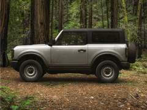
2022 Ford Bronco Wildtrak
Just listed
34,861 mi 2.7L 6-cyl turbo, 4x4 Cyber Orange Metallic Tricoat 4-door ~17 mpg, about $6,868/yr in gas at 25,000 mi
354A Lux Package
Louisville INFINITI ★5.0, Louisville, KY, 241 mi away, listed 7 days ago
23
no photo
2023 Ford Bronco Raptor
63,133 mi 3L 6-cyl turbo, 4x4 Code Orange 4-door ~15 mpg, about $7,783/yr in gas at 25,000 mi
374A Lux Package; Interior Carbon Fibre Pack
Carzby ★4.8, Fenton, MI, 238 mi away, listed 26 days ago
24
2021 Ford Bronco Badlands
73,229 mi 2.3L 4-cyl turbo, 4x4 Orange Metallic 4-door ~15 mpg, about $7,783/yr in gas at 25,000 mi
333A High Package
Clift Buick GMC ★4.9, Adrian, MI, 201 mi away, listed 53 days ago
25
2021 Ford Bronco Outer Banks
Sasquatch (35s)
76,003 mi 2.7L 6-cyl turbo, 4x4 Cyber Orange Metallic Tricoat 4-door ~17 mpg, about $6,868/yr in gas at 25,000 mi
Sasquatch Package; 313A High Package
Derrow-Shirkey Ford Lincoln ★4.3, Montpelier, OH, 170 mi away, listed 19 days ago
26
2022 Ford Bronco Outer Banks
$2,525 over KBB fair price One owner
25,562 mi 2.7L 6-cyl turbo, 4x4 Cyber Orange Metallic 4-door ~19 mpg, about $6,145/yr in gas at 25,000 mi
314A Lux Package
The Auto Livery ★4.3, Ross, OH, 215 mi away, listed 409 days ago
27
2021 Ford Bronco Black Diamond
Certified pre-owned $1,960 over KBB fair price One owner
79,723 mi 2.3L 4-cyl turbo, 4x4, manual Orange Metallic 4-door ~15 mpg, about $7,783/yr in gas at 25,000 mi
Brighton Ford ★4.8, Brighton, MI, 227 mi away, listed 30 days ago
Cheaper and new: 2026 Bronco Sport in Orange Fury
Orange Fury Metallic Tri-coat is new for 2026 and is the closest Ford gets to yellow today. The Bronco Sport is the smaller, car-based Bronco: 26 mpg instead of 20, a quieter cabin, no removable roof. New ones in this color are being discounted $4,000 to $7,000 under sticker. All orange Bronco Sports .
1
2026 Ford Bronco Sport Big Bend
New $6,176 under sticker
New 1.5L 3-cyl turbo, 4x4 Orange Fury Metallic Tri-coat ~26 mpg, about $4,490/yr in gas at 25,000 mi
Convenience Package
GRAFF FORD OF CHESTERTON ★5.0, Chesterton, IN, 45 mi away, listed 91 days ago
2
2026 Ford Bronco Sport Outer Banks
New $6,234 under sticker
New 1.5L 3-cyl turbo, 4x4 Orange Fury Metallic Tri-coat ~26 mpg, about $4,490/yr in gas at 25,000 mi
Ford Connectivity Pack (1-Time Purchase - 7 Years)
Suntrup Ford Westport ★4.6, Saint Louis, MO, 223 mi away, listed 144 days ago
3
2026 Ford Bronco Sport Big Bend
New $5,627 under sticker
New 1.5L 3-cyl turbo, 4x4 Orange Fury Metallic Tri-coat ~26 mpg, about $4,490/yr in gas at 25,000 mi
Suntrup Ford Westport ★4.6, Saint Louis, MO, 223 mi away, listed 126 days ago
4
2026 Ford Bronco Sport Big Bend
New $5,508 under sticker
New 1.5L 3-cyl turbo, 4x4 Orange Fury Metallic Tri-coat ~26 mpg, about $4,490/yr in gas at 25,000 mi
Black Appearance Package
Buss Ford ★4.9, Mchenry, IL, 78 mi away, listed 310 days ago
5
2026 Ford Bronco Sport Big Bend
New $5,663 under sticker
New 1.5L 3-cyl turbo, 4x4 Orange Fury Metallic Tri-coat ~26 mpg, about $4,490/yr in gas at 25,000 mi
Black Appearance Package
Lebanon Ford ★5.0, Lebanon, OH, 229 mi away, listed 192 days ago
6
2026 Ford Bronco Sport Big Bend
New $5,439 under sticker
New 1.5L 3-cyl turbo, 4x4 Orange Fury Metallic Tri-coat ~26 mpg, about $4,490/yr in gas at 25,000 mi
Convenience Package; Black Appearance Package
Star Ford ★4.8, Streator, IL, 52 mi away, listed 93 days ago
7
2026 Ford Bronco Sport Big Bend
New $5,250 under sticker
New 1.5L 3-cyl turbo, 4x4 Orange Fury Metallic Tri-coat ~26 mpg, about $4,490/yr in gas at 25,000 mi
Convenience Package; Interior Protection Package
Mike Murphy Ford ★4.9, Morton, IL, 95 mi away, listed 133 days ago
8
2026 Ford Bronco Sport Big Bend
New $5,277 under sticker
New 1.5L 3-cyl turbo, 4x4 Orange Fury Metallic Tri-coat ~26 mpg, about $4,490/yr in gas at 25,000 mi
Ford Connectivity Pack (1-Time Purchase - 7 Years)
Wetzel Ford ★4.7, Richmond, IN, 186 mi away, listed 206 days ago
9
2026 Ford Bronco Sport Big Bend
New $4,950 under sticker
New 1.5L 3-cyl turbo, 4x4 Orange ~26 mpg, about $4,490/yr in gas at 25,000 mi
Landmark Ford ★4.2, Springfield, IL, 143 mi away, listed 92 days ago
10
2026 Ford Bronco Sport Outer Banks
Cut $500 since last check New $4,736 under sticker
New 1.5L 3-cyl turbo, 4x4 Orange Fury Metallic Tri-coat ~26 mpg, about $4,490/yr in gas at 25,000 mi
Webb Ford ★4.6, Highland, IN, 28 mi away, listed 63 days ago
No full-size 2026 Bronco in Orange Fury has reached a dealer lot inside 250 miles yet; one can be ordered through any Ford store. This board checks every day and will flag the first one.
Want a true yellow and a new truck?
Order a 2026 Bronco in Oxford White or Wimbledon White and have it wrapped yellow. A quality full wrap runs about $3,500 to $5,500 in the Chicago area, lasts 5 to 7 years, protects the paint and peels off at resale.
Orange Fury (2026) is a factory alternative in the same warm family. Shows in the configurator on Big Bend, Outer Banks and Badlands.
Skip the aftermarket respray: $8,000+ and it hurts resale. Before she buys any Bronco
Pull the Ford OASIS warranty history by VIN at the dealer: confirms whether a 2021 to early-2022 2.7 V6 had its intake-valve engine replacement, and whether the hardtop was swapped under the 2021 recall.
Prefer a 2.3-liter four for commuting miles: cheaper, 1 to 2 mpg better, and it sidestepped the 2.7 valve problem.
Sasquatch 35-inch tires cost about 2 mpg, add road noise and run $1,600 a set. Great for the look, bad for 25,000 miles a year.
Best Bronco deals in any color
Out of about 1,434 used and 3,403 new Broncos inside 250 miles, these are the ones priced furthest under KBB fair purchase price (used) or under sticker (new), with no accident or salvage history. Blue, white, green and red are plentiful; a wrap turns any of them yellow. All "Great price" Broncos on Autotrader .
Used, ranked by deal score
1
2023 Ford Bronco 4-Door
$7,511 under KBB fair price Autotrader: Great price One owner
296 mi 2.7L 6-cyl turbo, 4x4 Velocity Blue Metallic 4-door ~19 mpg, about $6,145/yr in gas at 25,000 mi
Top of the board: a 2023 4-Door Great price per Autotrader, $7,511 under KBB, 296 miles, one owner, 4.9-star dealer. Ranked on dollars under KBB fair purchase price, miles, year, distance and dealer rating.
Morrie's Grand Ledge Ford Lincoln ★4.9, Grand Ledge, MI, 191 mi away, listed 49 days ago
2
2023 Ford Bronco 4-Door
Certified pre-owned $7,158 under KBB fair price Autotrader: Great price One owner
15,880 mi 2.7L 6-cyl turbo, 4x4 Iconic Silver Metallic 4-door ~19 mpg, about $6,145/yr in gas at 25,000 mi
Sexton Ford Sales Inc ★4.8, Moline, IL, 139 mi away, listed 185 days ago
3
2023 Ford Bronco Big Bend
$6,477 under KBB fair price Autotrader: Great price One owner
27,561 mi 2.3L 4-cyl turbo, 4x4 Eruption Green Metallic 4-door ~15 mpg, about $7,783/yr in gas at 25,000 mi
222A Mid Package
Dorsett Automotive ★5.0, Terre Haute, IN, 129 mi away, listed 43 days ago
4
2023 Ford Bronco Outer Banks
Certified pre-owned $7,114 under KBB fair price Autotrader: Great price One owner
47,101 mi 2.7L 6-cyl turbo, 4x4 Shadow Black 4-door ~19 mpg, about $6,145/yr in gas at 25,000 mi
313A High Package
Lasco Ford ★4.7, Fenton, MI, 237 mi away, listed 44 days ago
5
2023 Ford Bronco Outer Banks
$6,440 under KBB fair price Autotrader: Great price One owner Price cut $959
27,579 mi 2.7L 6-cyl turbo, 4x4 Hot Pepper Red Metallic Tinted 4-door ~19 mpg, about $6,145/yr in gas at 25,000 mi
313A High Package
Webb Ford ★4.6, Highland, IN, 28 mi away, listed 171 days ago
6
2023 Ford Bronco Black Diamond
$6,909 under KBB fair price Autotrader: Great price
12,452 mi 2.3L 4-cyl turbo, 4x4 Oxford White 2-door ~15 mpg, about $7,783/yr in gas at 25,000 mi
Dave White Chevrolet ★4.5, Sylvania, OH, 218 mi away, listed 95 days ago
7
2021 Ford Bronco Outer Banks
$6,305 under KBB fair price Autotrader: Great price Price cut $1,197
56,636 mi 2.3L 4-cyl turbo, 4x4 Gray Metallic 4-door ~15 mpg, about $7,783/yr in gas at 25,000 mi
313A High Package
Tom Wood Ford ★4.7, Indianapolis, IN, 129 mi away, listed 100 days ago
8
2023 Ford Bronco Big Bend
$5,395 under KBB fair price Autotrader: Great price One owner
37,640 mi 2.3L 4-cyl turbo, 4x4 Hot Pepper Red Metallic Tinted 4-door ~15 mpg, about $7,783/yr in gas at 25,000 mi
Ed Napleton Honda in River Oaks ★5.0, Lansing, IL, 27 mi away, listed 17 days ago
9
2023 Ford Bronco Big Bend
Certified pre-owned $5,929 under KBB fair price Autotrader: Great price One owner
41,572 mi 2.3L 4-cyl turbo, 4x4 Area 51 4-door ~15 mpg, about $7,783/yr in gas at 25,000 mi
222A Mid Package
Lasco Ford ★4.7, Fenton, MI, 237 mi away, listed 35 days ago
10
2025 Ford Bronco Badlands
$6,258 under KBB fair price Autotrader: Great price One owner Sasquatch (35s)
6 mi 2.3L 4-cyl turbo, 4x4 Gray 4-door ~15 mpg, about $7,783/yr in gas at 25,000 mi
Sasquatch Package
Woodhams Ford Lincoln ★4.5, South Haven, MI, 113 mi away, listed 339 days ago
11
2023 Ford Bronco Outer Banks
Certified pre-owned $6,200 under KBB fair price Autotrader: Great price One owner Price cut $2,280 Sasquatch (35s)
31,224 mi 2.7L 6-cyl turbo, 4x4 Oxford White 4-door ~17 mpg, about $6,868/yr in gas at 25,000 mi
Sasquatch Package
Brighton Ford ★4.8, Brighton, MI, 227 mi away, listed 51 days ago
12
2022 Ford Bronco Outer Banks
Cut $136 since last check $5,802 under KBB fair price Autotrader: Great price
32,493 mi 2.3L 4-cyl turbo, 4x4 Blue Metallic 4-door ~15 mpg, about $7,783/yr in gas at 25,000 mi
314A Lux Package
Toyota of Downtown Chicago ★4.6, Chicago, IL, 47 mi away, listed 56 days ago
13
2024 Ford Bronco Badlands
$5,278 under KBB fair price Autotrader: Great price One owner
8,919 mi 2.7L 6-cyl turbo, 4x4 Cactus 2-door ~17 mpg, about $6,868/yr in gas at 25,000 mi
Napleton's River Oaks Chrysler Jeep Dodge ★5.0, Lansing, IL, 27 mi away, listed 37 days ago
14
2023 Ford Bronco Outer Banks
$5,696 under KBB fair price Autotrader: Great price One owner Price cut $2,970
21,009 mi 2.7L 6-cyl turbo, 4x4 Cactus Gray 4-door ~19 mpg, about $6,145/yr in gas at 25,000 mi
314A Lux Package
Reineke Ford Lincoln of Lima ★4.8, Lima, OH, 200 mi away, listed 66 days ago
15
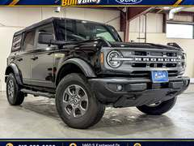
2023 Ford Bronco Big Bend
Certified pre-owned $5,928 under KBB fair price One owner
28,944 mi 2.3L 4-cyl turbo, 4x4 Shadow Black 4-door ~15 mpg, about $7,783/yr in gas at 25,000 mi
222A Mid Package
Bull Valley Ford ★4.5, Woodstock, IL, 79 mi away, listed 112 days ago
16
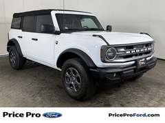
2023 Ford Bronco Big Bend
$5,445 under KBB fair price Autotrader: Great price One owner
32,907 mi 2.3L 4-cyl turbo, 4x4 Oxford White 4-door ~15 mpg, about $7,783/yr in gas at 25,000 mi
222A Mid Package
PricePro Ford LLC, Whitehouse, OH, 211 mi away, listed 116 days ago
17
2023 Ford Bronco Outer Banks
$6,223 under KBB fair price Autotrader: Great price
64,756 mi 2.7L 6-cyl turbo, 4x4 Iconic Silver Metallic 4-door ~19 mpg, about $6,145/yr in gas at 25,000 mi
Jeff Wyler Acura of Fairfield ★4.8, Fairfield, OH, 219 mi away, listed 127 days ago
18
2023 Ford Bronco Big Bend
New since last check Certified pre-owned $5,260 under KBB fair price Autotrader: Great price One owner Price cut $875
36,401 mi 2.3L 4-cyl turbo, 4x4 Velocity Blue Metallic 4-door ~15 mpg, about $7,783/yr in gas at 25,000 mi
222A Mid Package
Suntrup Ford - Westport ★4.6, Saint Louis, MO, 223 mi away, listed 38 days ago
19
2025 Ford Bronco Badlands
Certified pre-owned $5,230 under KBB fair price Autotrader: Great price One owner
19,943 mi 2.7L 6-cyl turbo, 4x4 Azure Gray Metallic 4-door ~17 mpg, about $6,868/yr in gas at 25,000 mi
332A Mid Package
Hopkins Ford of Elgin ★4.8, Elgin, IL, 58 mi away, listed 79 days ago
20
2024 Ford Bronco Raptor
$7,481 under KBB fair price Autotrader: Great price One owner
7,647 mi 3L 6-cyl turbo, 4x4 Shadow Black 4-door ~15 mpg, about $7,783/yr in gas at 25,000 mi
Cronin Richmond Toyota Nissan ★5.0, Richmond, IN, 186 mi away, listed 189 days ago
21
2022 Ford Bronco Black Diamond
$5,220 under KBB fair price One owner
20,991 mi 2.3L 4-cyl turbo, 4x4, manual Silver Metallic 4-door ~15 mpg, about $7,783/yr in gas at 25,000 mi
Unlimited Motors 3 ★4.7, Noblesville, IN, 125 mi away, listed 86 days ago
22
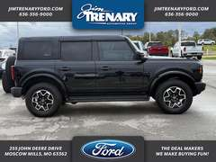
2026 Ford Bronco Outer Banks
New since last check $5,342 under KBB fair price Autotrader: Great price One owner
11,261 mi 2.7L 6-cyl turbo, 4x4 Shadow Black - Black 4-door ~19 mpg, about $6,145/yr in gas at 25,000 mi
Jim Trenary Ford ★4.3, Moscow Mills, MO, 228 mi away, listed 30 days ago
23
2021 Ford Bronco First Edition
Cut $1,500 since last check Certified pre-owned $6,280 under KBB fair price Autotrader: Great price
25,593 mi 2.7L 6-cyl turbo, 4x4 Area 51 4-door ~19 mpg, about $6,145/yr in gas at 25,000 mi
Hopkins Ford of Elgin ★4.8, Elgin, IL, 58 mi away, listed 65 days ago
24
2025 Ford Bronco Badlands
New since last check $4,713 under KBB fair price Autotrader: Great price One owner
7,903 mi 2.7L 6-cyl turbo, 4x4 Gray Metallic 4-door ~17 mpg, about $6,868/yr in gas at 25,000 mi
332A Mid Package
Wetzel Ford ★4.7, Richmond, IN, 186 mi away, listed 133 days ago
25
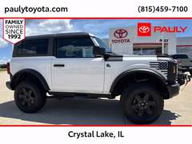
2023 Ford Bronco Black Diamond
New since last check $4,875 under KBB fair price Autotrader: Great price
23,009 mi 2.7L 6-cyl turbo, 4x4 Oxford White 2-door ~19 mpg, about $6,145/yr in gas at 25,000 mi
Pauly Toyota ★4.8, Crystal Lake, IL, 70 mi away, listed 149 days ago
26
2022 Ford Bronco Wildtrak
$5,090 under KBB fair price Autotrader: Great price One owner Price cut $1,699
38,881 mi 2.7L 6-cyl turbo, 4x4 Shadow Black 4-door ~17 mpg, about $6,868/yr in gas at 25,000 mi
354A Lux Package
Metro KIA of Madison ★4.6, Madison, WI, 150 mi away, listed 88 days ago
27
2024 Ford Bronco Badlands
New since last check $4,841 under KBB fair price Autotrader: Great price
24,553 mi 2.7L 6-cyl turbo, 4x4 Cactus Gray 2-door ~17 mpg, about $6,868/yr in gas at 25,000 mi
334A High/Lux Package
Queen City Ford ★5.0, Cincinnati, OH, 227 mi away, listed 112 days ago
28
2022 Ford Bronco 2-Door
$5,061 under KBB fair price Autotrader: Great price Sasquatch (35s)
18,772 mi 2.7L 6-cyl turbo, 4x4 Iconic Silver Metallic 2-door ~17 mpg, about $6,868/yr in gas at 25,000 mi
Sasquatch Package
Vaughn Automotive ★3.7, Ottumwa, IA, 240 mi away, listed 72 days ago
29
2023 Ford Bronco Outer Banks
$4,654 under KBB fair price Autotrader: Great price One owner
21,026 mi 2.7L 6-cyl turbo, 4x4 Oxford White 4-door ~19 mpg, about $6,145/yr in gas at 25,000 mi
313A High Package
Marshall Ford ★4.4, Carrollton, KY, 230 mi away, listed 198 days ago
30
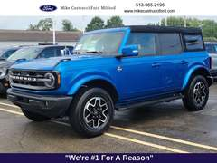
2023 Ford Bronco Outer Banks
Certified pre-owned $4,700 under KBB fair price Autotrader: Great price
20,283 mi 2.7L 6-cyl turbo, 4x4 Velocity Blue Metallic 4-door ~19 mpg, about $6,145/yr in gas at 25,000 mi
313A High Package
Mike Castrucci Ford ★4.6, Milford, OH, 237 mi away, listed 74 days ago
31
2022 Ford Bronco Raptor
Certified pre-owned $7,592 under KBB fair price Autotrader: Great price
45,976 mi 3L 6-cyl turbo, 4x4 Cyber Orange Metallic Tricoat 4-door ~15 mpg, about $7,783/yr in gas at 25,000 mi
374A Lux Package; Interior Carbon Fiber Pack 6
Suntrup Ford - Westport ★4.6, Saint Louis, MO, 223 mi away, listed 71 days ago
32
2021 Ford Bronco First Edition
$5,777 under KBB fair price Autotrader: Great price
29,197 mi 2.7L 6-cyl turbo, 4x4 Rapid Red Metallic Tinted Clea 2-door ~19 mpg, about $6,145/yr in gas at 25,000 mi
Lani Chevrolet GMC Chrysler Dodge Jeep Ram ★4.9, Mount Pleasant, IA, 193 mi away, listed 32 days ago
33
2023 Ford Bronco Big Bend
New since last check Certified pre-owned $4,655 under KBB fair price
34,087 mi 2.3L 4-cyl turbo, 4x4 Race Red 4-door ~15 mpg, about $7,783/yr in gas at 25,000 mi
222A Mid Package
Roanoke Ford ★4.9, Roanoke, IL, 77 mi away, listed 120 days ago
34
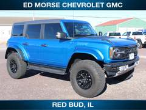
2024 Ford Bronco Raptor
$5,077 under KBB fair price Autotrader: Great price One owner
14,530 mi 3L 6-cyl turbo, 4x4 Blue Metallic 4-door ~15 mpg, about $7,783/yr in gas at 25,000 mi
Ed Morse Chevrolet GMC ★4.7, Red Bud, IL, 240 mi away, listed 45 days ago
35
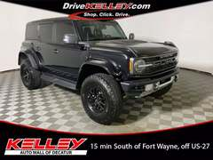
2024 Ford Bronco Raptor
New since last check $4,682 under KBB fair price Autotrader: Great price One owner Price cut $2,660
20,798 mi 3L 6-cyl turbo, 4x4 Shadow Black 4-door ~15 mpg, about $7,783/yr in gas at 25,000 mi
Interior Carbon Fiber Pack 6
Tom Kelley Chevrolet Decatur ★5.0, Decatur, IN, 154 mi away, listed 20 days ago
36
2022 Ford Bronco Raptor
New since last check $4,861 under KBB fair price Autotrader: Great price One owner
54,970 mi 3L 6-cyl turbo, 4x4 Shadow Black 4-door ~15 mpg, about $7,783/yr in gas at 25,000 mi
374A Lux Package; Interior Carbon Fiber Pack 6
Premier Auto Source - IN ★4.7, Terre Haute, IN, 130 mi away, listed 177 days ago
New 4-door Big Bends with the biggest discounts
Big Bend 4-door with the 2.3 and the 222A Mid package is the sweet spot for a daily driver. Dealers are discounting 2026 stock thousands under sticker before any Ford rebate; add Ford Credit financing offers on top at the desk.
1
2026 Ford Bronco 4-Door
New $8,491 under sticker
New 2.3L 4-cyl turbo, 4x4 Shadow Black 4-door ~15 mpg, about $7,783/yr in gas at 25,000 mi
Murgado Ford of Chicago ★4.6, Chicago, IL, 48 mi away, listed 246 days ago
2
2026 Ford Bronco Big Bend
New $8,838 under sticker
New 2.3L 4-cyl turbo, 4x4 Shadow Black 4-door ~15 mpg, about $7,783/yr in gas at 25,000 mi
222A Mid Package
Ford of Homewood ★5.0, Homewood, IL, 23 mi away, listed 32 days ago
3
2026 Ford Bronco Big Bend
New $9,086 under sticker
New 2.3L 4-cyl turbo, 4x4 Avalanche Gray 4-door ~15 mpg, about $7,783/yr in gas at 25,000 mi
222A Mid Package; Black Appearance Package
Ford of Homewood ★5.0, Homewood, IL, 23 mi away, listed 44 days ago
4
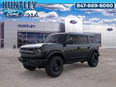
2026 Ford Bronco Big Bend
New $9,318 under sticker
New 2.3L 4-cyl turbo, 4x4 Shadow Black 4-door ~15 mpg, about $7,783/yr in gas at 25,000 mi
Black Diamond Package
Huntley Ford ★4.8, Huntley, IL, 68 mi away, listed 154 days ago
5
2026 Ford Bronco 4-Door
New $8,730 under sticker
New 2.3L 4-cyl turbo, 4x4 Ruby Red Metallic Tinted Clear 4-door ~15 mpg, about $7,783/yr in gas at 25,000 mi
Mike Castrucci Ford Milford ★4.6, Milford, OH, 237 mi away, listed 65 days ago
6
2026 Ford Bronco Big Bend
New $8,326 under sticker
New 2.3L 4-cyl turbo, 4x4 Oxford White 4-door ~15 mpg, about $7,783/yr in gas at 25,000 mi
222A Mid Package
Huntley Ford ★4.8, Huntley, IL, 68 mi away, listed 42 days ago
7
2026 Ford Bronco Big Bend
New $8,438 under sticker
New 2.3L 4-cyl turbo, 4x4 Oxford White 4-door ~15 mpg, about $7,783/yr in gas at 25,000 mi
222A Mid Package
Huntley Ford ★4.8, Huntley, IL, 68 mi away, listed 29 days ago
8
2025 Ford Bronco 4-Door
New $9,540 under sticker Sasquatch (35s)
New 2.3L 4-cyl turbo, 4x4 Ruby Red Metallic Tinted Clear 4-door ~15 mpg, about $7,783/yr in gas at 25,000 mi
Sasquatch Package
Lebanon Ford ★5.0, Lebanon, OH, 229 mi away, listed 44 days ago
9
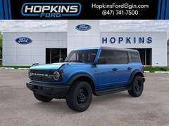
2026 Ford Bronco Big Bend
New $8,431 under sticker
New 2.3L 4-cyl turbo, 4x4 Velocity Blue Metallic 4-door ~15 mpg, about $7,783/yr in gas at 25,000 mi
222A Mid Package; Black Appearance Package
Hopkins Ford of Elgin ★4.8, Elgin, IL, 58 mi away, listed 50 days ago
10
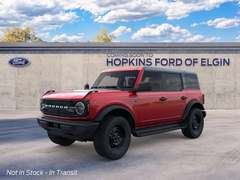
2026 Ford Bronco Big Bend
New $8,327 under sticker
New 2.3L 4-cyl turbo, 4x4 Ruby Red Metallic Tinted Clear 4-door ~15 mpg, about $7,783/yr in gas at 25,000 mi
Hopkins Ford of Elgin ★4.8, Elgin, IL, 58 mi away, listed 30 days ago
11
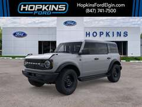
2026 Ford Bronco Big Bend
New $8,327 under sticker
New 2.3L 4-cyl turbo, 4x4 Avalanche Gray 4-door ~15 mpg, about $7,783/yr in gas at 25,000 mi
222A Mid Package; Black Appearance Package
Hopkins Ford of Elgin ★4.8, Elgin, IL, 58 mi away, listed 42 days ago
12
2026 Ford Bronco Big Bend
New $8,327 under sticker
New 2.3L 4-cyl turbo, 4x4 Desert Sand 4-door ~15 mpg, about $7,783/yr in gas at 25,000 mi
222A Mid Package; Black Appearance Package
Hopkins Ford of Elgin ★4.8, Elgin, IL, 58 mi away, listed 39 days ago
Cheapest new Broncos, period
1
2026 Ford Bronco 4-Door
New $8,491 under sticker
New 2.3L 4-cyl turbo, 4x4 Shadow Black 4-door ~15 mpg, about $7,783/yr in gas at 25,000 mi
Murgado Ford of Chicago ★4.6, Chicago, IL, 48 mi away, listed 246 days ago
2
2026 Ford Bronco 2-Door
New $8,491 under sticker
New 2.3L 4-cyl turbo, 4x4 Carbonized Gray Metallic 2-door ~15 mpg, about $7,783/yr in gas at 25,000 mi
Murgado Ford of Chicago ★4.6, Chicago, IL, 48 mi away, listed 242 days ago
3
2026 Ford Bronco 2-Door
New $8,491 under sticker
New 2.3L 4-cyl turbo, 4x4 Oxford White 2-door ~15 mpg, about $7,783/yr in gas at 25,000 mi
Murgado Ford of Chicago ★4.6, Chicago, IL, 48 mi away, listed 234 days ago
4
2026 Ford Bronco 4-Door
New $7,496 under sticker
New 2.3L 4-cyl turbo, 4x4 Gray Metallic 4-door ~15 mpg, about $7,783/yr in gas at 25,000 mi
Kerry Ford ★4.4, Springdale, OH, 223 mi away, listed 281 days ago
5
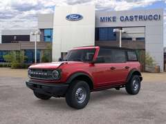
2026 Ford Bronco 4-Door
New $7,285 under sticker
New 2.3L 4-cyl turbo, 4x4 Ruby Red Metallic Tinted Clear 4-door ~15 mpg, about $7,783/yr in gas at 25,000 mi
Mike Castrucci Ford Alexandria ★4.7, Alexandria, KY, 240 mi away, listed 170 days ago
6
2026 Ford Bronco 2-Door
New $7,745 under sticker
New 2.3L 4-cyl turbo, 4x4 Marsh Gray 2-door ~15 mpg, about $7,783/yr in gas at 25,000 mi
Mike Castrucci Ford Alexandria ★4.7, Alexandria, KY, 240 mi away, listed 164 days ago
7
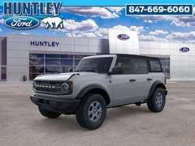
2026 Ford Bronco Big Bend
New $8,307 under sticker Accident reported
New 2.3L 4-cyl turbo, 4x4 Avalanche 4-door ~15 mpg, about $7,783/yr in gas at 25,000 mi
Ford Connectivity Pack (One-Time Purchase - 7 Yrs)
Huntley Ford ★4.8, Huntley, IL, 68 mi away, listed 158 days ago
8
2026 Ford Bronco Big Bend
New $7,793 under sticker
New 2.3L 4-cyl turbo, 4x4 Oxford White 4-door ~15 mpg, about $7,783/yr in gas at 25,000 mi
Huntley Ford ★4.8, Huntley, IL, 68 mi away, listed 156 days ago
Road-warrior hybrids
For someone who drives a lot, the thing that matters most after the purchase price is the gas bill and the repair bill. These three put up 36 to 40 mpg in the real world, carry the best reliability records in the SUV class, and still sit high with all-wheel drive for Illinois winters. At 25,000 miles a year a RAV4 Hybrid costs roughly $2,994 a year in gas against $5,838 for a Bronco.
Fit for her
Toyota RAV4 Hybrid Reliability ★★★★★ · Comfort ★★★★ · Room ★★★★
39 mpg combined, AWD standard on the hybrid Toyota Safety Sense (adaptive cruise, lane centering) on every trim Hybrid battery warranty 10 yr / 150,000 mi on 2020 and newer Rear seats fold flat: 69 cu ft, a 6-foot sleeping length Fit for her
Honda CR-V Hybrid Reliability ★★★★★ · Comfort ★★★★★ · Room ★★★★★
37 to 40 mpg, the quietest and roomiest of the compact hybrids Sport-L and Sport Touring get leather and the big screen Most back-seat legroom in the class (41 in) Fewer used ones near Chicago; the good ones are 1 to 3 hours out Fit for her
Lexus NX 350h / RX 350h Reliability ★★★★★ · Comfort ★★★★★ · Room ★★★
Same Toyota hybrid hardware in a quieter, softer car with better seats NX 350h 39 mpg, RX 350h 36 mpg; skip the RX 500h (27 mpg) Lexus certified pre-owned adds a 6-year unlimited-mile warranty Costs $15,000 more than a RAV4 for the same bones; worth it only if comfort is the whole point
Toyota RAV4 Hybrid 1
2023 Toyota RAV4 Limited
$3,040 under KBB fair price Autotrader: Great price
104,826 mi 2.5L hybrid, AWD Magnetic Gray Metallic ~39 mpg, about $2,994/yr in gas at 25,000 mi
Chicago Northside Toyota ★4.9, Chicago, IL, 52 mi away, listed 140 days ago
2
2021 Toyota RAV4 Limited
Certified pre-owned $3,247 under KBB fair price Autotrader: Great price Price cut $6,949
79,691 mi 2.5L hybrid, AWD Silver Sky Metallic ~39 mpg, about $2,994/yr in gas at 25,000 mi
Oxmoor Toyota ★5.0, Louisville, KY, 239 mi away, listed 64 days ago
3
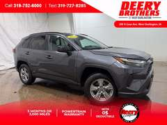
2024 Toyota RAV4 LE
New since last check $1,935 under KBB fair price Autotrader: Great price Price cut $1,331
112,178 mi 2.5L hybrid, AWD Magnetic Gray Metallic ~39 mpg, about $2,994/yr in gas at 25,000 mi
Deery Brothers of West Burlington ★4.8, West Burlington, IA, 176 mi away, listed 158 days ago
4
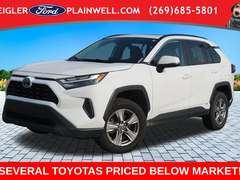
2023 Toyota RAV4 XLE
New since last check $1,759 under KBB fair price Autotrader: Great price One owner
105,914 mi 2.5L hybrid, AWD Ice ~39 mpg, about $2,994/yr in gas at 25,000 mi
Convenience Package
Zeigler Ford Plainwell ★4.9, Plainwell, MI, 139 mi away, listed 95 days ago
5
2020 Toyota RAV4 LE
Certified pre-owned $1,731 under KBB fair price Autotrader: Great price Price cut $1,119
66,083 mi 2.5L hybrid, AWD Silver Sky Metallic ~39 mpg, about $2,994/yr in gas at 25,000 mi
All Weather Liner Package
Toyota of Merrillville ★4.9, Merrillville, IN, 33 mi away, listed 64 days ago
6
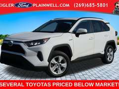
2021 Toyota RAV4 LE
New since last check $1,914 under KBB fair price Autotrader: Great price One owner
141,259 mi 2.5L hybrid, AWD Super White ~39 mpg, about $2,994/yr in gas at 25,000 mi
Zeigler Ford Plainwell ★4.9, Plainwell, MI, 139 mi away, listed 81 days ago
7
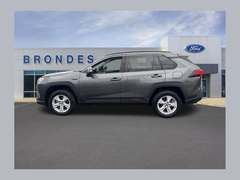
2020 Toyota RAV4 XLE
New since last check $1,891 under KBB fair price Autotrader: Great price One owner Price cut $1,394
114,572 mi 2.5L hybrid, AWD Magnetic Gray Metallic ~39 mpg, about $2,994/yr in gas at 25,000 mi
Convenience Package; All Weather Liner Package
Brondes Ford Toledo ★5.0, Toledo, OH, 221 mi away, listed 51 days ago
8
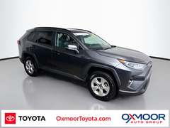
2021 Toyota RAV4 XLE
New since last check Certified pre-owned $1,802 under KBB fair price Autotrader: Great price Price cut $3,694
75,762 mi 2.5L hybrid, AWD Magnetic Gray Metallic ~39 mpg, about $2,994/yr in gas at 25,000 mi
Convenience Package
Oxmoor Toyota ★5.0, Louisville, KY, 239 mi away, listed 78 days ago
New RAV4 (all hybrid now) 1
no photo
2026 Toyota RAV4 LE
New $130 under sticker
New 2.5L hybrid, FWD Ice Cap ~39 mpg, about $2,994/yr in gas at 25,000 mi
Lou Fusz Toyota ★4.9, Saint Louis, MO, 228 mi away, listed 17 days ago
2
no photo
2026 Toyota RAV4 FWD
New $130 under sticker Just listed
New 2.5L hybrid, FWD Ice Cap ~39 mpg, about $2,994/yr in gas at 25,000 mi
Lou Fusz Toyota ★4.9, Saint Louis, MO, 228 mi away, listed 4 days ago
3
2026 Toyota RAV4 LE
New $52 under sticker
New 2.5L hybrid, FWD Ice Cap ~39 mpg, about $2,994/yr in gas at 25,000 mi
South Dayton Toyota ★4.9, Miamisburg, OH, 221 mi away, listed 8 days ago
Honda CR-V Hybrid 1
2025 Honda CR-V Sport Touring
Certified pre-owned $3,798 under KBB fair price Autotrader: Great price One owner Price cut $2,447
64,338 mi 2L hybrid, AWD Still Night Pearl ~37 mpg, about $3,155/yr in gas at 25,000 mi
Honda Marysville ★5.0, Marysville, OH, 246 mi away, listed 80 days ago
2
2025 Honda CR-V Sport
$2,471 under KBB fair price Autotrader: Great price
25,373 mi 2L hybrid, FWD Crystal Black Pearl ~40 mpg, about $2,919/yr in gas at 25,000 mi
Jake Sweeney Mitsubishi ★5.0, Cincinnati, OH, 223 mi away, listed 64 days ago
3
2025 Honda CR-V Sport Touring
Cut $151 since last check $2,551 under KBB fair price Autotrader: Great price One owner
65,238 mi 2L hybrid, AWD Platinum White Pearl ~37 mpg, about $3,155/yr in gas at 25,000 mi
Toyota of Downtown Chicago ★4.6, Chicago, IL, 47 mi away, listed 48 days ago
4
2023 Honda CR-V Sport Touring
Cut $100 since last check Certified pre-owned $2,355 under KBB fair price Autotrader: Great price One owner
43,592 mi 2L hybrid, AWD Lunar Silver Metallic ~37 mpg, about $3,155/yr in gas at 25,000 mi
McGrath Honda of St. Charles ★4.7, Saint Charles, IL, 52 mi away, listed 35 days ago
5
2024 Honda CR-V Sport
Cut $300 since last check $2,230 under KBB fair price Autotrader: Great price One owner
76,481 mi 2L hybrid, AWD Lunar Silver Metallic ~37 mpg, about $3,155/yr in gas at 25,000 mi
Brad Deery Honda ★4.9, West Burlington, IA, 176 mi away, listed 91 days ago
6
2023 Honda CR-V Sport
$1,936 under KBB fair price Autotrader: Great price One owner Price cut $1,500
31,405 mi 2L hybrid, FWD Blue ~40 mpg, about $2,919/yr in gas at 25,000 mi
Airport Ford ★4.6, Florence, KY, 229 mi away, listed 23 days ago
7
2025 Honda CR-V Sport
New since last check Certified pre-owned $1,578 under KBB fair price Autotrader: Great price One owner Price cut $2,550
24,937 mi 2L hybrid, AWD Radiant Red Metallic ~37 mpg, about $3,155/yr in gas at 25,000 mi
Performance Kings Honda ★4.7, Cincinnati, OH, 230 mi away, listed 25 days ago
8
2022 Honda CR-V Touring
New since last check Certified pre-owned $1,621 under KBB fair price Autotrader: Great price One owner Price cut $962
57,627 mi 2L hybrid, AWD Sonic Gray Pearl ~37 mpg, about $3,155/yr in gas at 25,000 mi
Jeff Wyler Honda in Florence ★4.9, Florence, KY, 229 mi away, listed 25 days ago
New CR-V Hybrid 1
2027 Honda CR-V Sport
New $1,764 under sticker
New 2L hybrid, AWD Solar Silver Metallic ~37 mpg, about $3,155/yr in gas at 25,000 mi
Ed Napleton Honda in Oak Lawn ★5.0, Oak Lawn, IL, 33 mi away, listed 24 days ago
2
2027 Honda CR-V Sport
New $1,764 under sticker
New 2L hybrid, AWD Meteorite Gray Metallic ~37 mpg, about $3,155/yr in gas at 25,000 mi
Ed Napleton Honda in River Oaks ★5.0, Lansing, IL, 27 mi away, listed 23 days ago
3
2027 Honda CR-V Sport
New $1,764 under sticker Just listed
New 2L hybrid, AWD Canyon River Blue Metallic ~37 mpg, about $3,155/yr in gas at 25,000 mi
Neil Huffman Honda ★5.0, Clarksville, IN, 230 mi away, listed 7 days ago
Lexus hybrids 1
2025 Lexus NX 350h AWD
Certified pre-owned $6,680 under KBB fair price One owner
14,598 mi 2.5L hybrid, 4x4 Grecian Water ~39 mpg, about $2,994/yr in gas at 25,000 mi
Cold Area Package; Towing Package (2000 Lbs)
McGrath Lexus of Westmont ★4.8, Westmont, IL, 39 mi away, listed 123 days ago
2
2026 Lexus RX 350h
$4,878 under KBB fair price Autotrader: Great price One owner Price cut $2,748
15,748 mi 2.5L hybrid, 4x4 Iridium ~36 mpg, about $3,243/yr in gas at 25,000 mi
Convenience Package; Accessory Package (Z1)
Serra Auto Campus ★5.0, Okemos, MI, 200 mi away, listed 15 days ago
3
2025 Lexus NX 350h AWD
$3,740 under KBB fair price Autotrader: Great price One owner Price cut $8,120
17,645 mi 2.5L hybrid, 4x4 Silver ~39 mpg, about $2,994/yr in gas at 25,000 mi
Cold Area Package; Towing Package (2000 Lbs)
Wagner Subaru ★5.0, Fairborn, OH, 224 mi away, listed 82 days ago
4
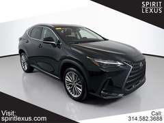
2025 Lexus NX 350h AWD
Certified pre-owned $4,791 under KBB fair price Autotrader: Great price Price cut $2,300
16,678 mi 2.5L hybrid, 4x4 Caviar ~39 mpg, about $2,994/yr in gas at 25,000 mi
Accessory Package (2T); Cold Area Package; Towing
Spirit Lexus ★4.8, St. Louis, MO, 223 mi away, listed 21 days ago
5
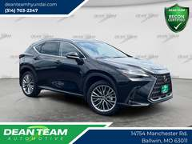
2025 Lexus NX 350h AWD
New since last check $3,582 under KBB fair price Autotrader: Great price One owner
8,212 mi 2.5L hybrid, 4x4 Caviar ~39 mpg, about $2,994/yr in gas at 25,000 mi
Rear Seat Package; Cold Area Package; Towing Packa
Dean Team Hyundai ★4.8, Ballwin, MO, 232 mi away, listed 186 days ago
6
2026 Lexus RX 350h
Certified pre-owned $4,206 under KBB fair price One owner
8,656 mi 2.5L hybrid, 4x4 Caviar ~36 mpg, about $3,243/yr in gas at 25,000 mi
Convenience Package; Accessory Package (Z1)
Fort Wayne Lexus ★4.7, Fort Wayne, IN, 137 mi away, listed 49 days ago
7
2021 Lexus RX 450h AWD
$3,886 under KBB fair price Autotrader: Great price One owner
100,573 mi 3.5L hybrid, 4x4 Mica ~30 mpg, about $3,892/yr in gas at 25,000 mi
Premium Package
Elmhurst Ford ★5.0, Bensenville, IL, 48 mi away, listed 79 days ago
8
2025 Lexus RX 500h F Sport
$4,093 under KBB fair price Autotrader: Great price
13,163 mi 2.4L hybrid, 4x4 Cloudburst Gray ~27 mpg, about $4,324/yr in gas at 25,000 mi
Convenience Package; Accessory Package (2T)
Toyota of Louisville ★5.0, Louisville, KY, 239 mi away, listed 142 days ago
Live-in-it space
If "lives in her car" is close to literal, the Bronco is the wrong shape: short, loud, a high load floor and 20 mpg. These are the vehicles with a flat floor you can stretch out on, three rows of seats that disappear, power everything and real highway quiet. The Sienna is the standout: a hybrid minivan that gets 36 mpg, offers AWD, and has 101 cu ft behind the front seats.
Fit for her
Toyota Sienna (hybrid) Reliability ★★★★★ · Comfort ★★★★★ · Room ★★★★★
36 mpg combined, every one is a hybrid, AWD available Third row folds into the floor; 8 feet of flat floor with the second row out Power sliding doors, 120-volt outlet, available built-in vacuum and fridge Ex-rental XLEs from Hertz are the cheap way in; get a pre-purchase inspection Fit for her
Toyota Grand Highlander / Highlander Hybrid Reliability ★★★★ · Comfort ★★★★★ · Room ★★★★★
34 to 36 mpg in a 3-row SUV; nothing else this size comes close Grand Highlander has 98 cu ft and an adult-size third row Highlander Hybrid used examples start near $30,000 Both ride and sound like a Lexus at highway speed Fit for her
Kia Telluride, Honda Odyssey, Kia Carnival Reliability ★★★★ · Comfort ★★★★★ · Room ★★★★★
Telluride: best-looking 3-row, 10-yr/100k powertrain warranty, but 21 mpg Odyssey: the best-driving minivan, 22 mpg, the most used supply near you Carnival: minivan that looks like an SUV; 2025+ hybrid gets 33 mpg All three cost $3,000+ more a year in gas than the Sienna at 25,000 miles
Toyota Sienna 1
2025 Toyota Sienna XLE
$3,294 under KBB fair price Autotrader: Great price One owner Price cut $1,700
42,630 mi 2.5L hybrid, FWD Midnight Black Metallic ~36 mpg, about $3,243/yr in gas at 25,000 mi
Team Toyota ★5.0, Schererville, IN, 27 mi away, listed 44 days ago
2
2025 Toyota Sienna XLE
$4,525 under KBB fair price One owner
55,148 mi 2.5L hybrid, FWD Magnetic Gray Metallic ~36 mpg, about $3,243/yr in gas at 25,000 mi
Lou Fusz Ford ★4.4, Chesterfield, MO, 231 mi away, listed 18 days ago
3
2024 Toyota Sienna LE
New since last check $2,330 under KBB fair price Autotrader: Great price One owner
41,840 mi 2.5L hybrid, FWD Ice ~36 mpg, about $3,243/yr in gas at 25,000 mi
Ed Napleton Honda in Oak Lawn ★5.0, Oak Lawn, IL, 33 mi away, listed 32 days ago
4
2023 Toyota Sienna XSE
$3,602 under KBB fair price Autotrader: Great price One owner
65,568 mi 2.5L hybrid, FWD Blueprint ~36 mpg, about $3,243/yr in gas at 25,000 mi
XSE Plus Package
Marshall Dry Ridge Toyota ★4.8, Dry Ridge, KY, 247 mi away, listed 64 days ago
5
2025 Toyota Sienna LE
Certified pre-owned $1,669 under KBB fair price Autotrader: Great price One owner
18,576 mi 2.5L hybrid, FWD Midnight Black Metallic ~36 mpg, about $3,243/yr in gas at 25,000 mi
Wilde Toyota ★4.9, Milwaukee, WI, 120 mi away, listed 91 days ago
6
2022 Toyota Sienna Platinum
$2,950 under KBB fair price Autotrader: Great price Price cut $2,244
97,984 mi 2.5L hybrid, FWD Wind Chill Pearl ~36 mpg, about $3,243/yr in gas at 25,000 mi
Fritz in Fishers ★4.9, Fishers, IN, 131 mi away, listed 66 days ago
7
2023 Toyota Sienna XSE
Cut $418 since last check $1,684 under KBB fair price Autotrader: Great price
69,950 mi 2.5L hybrid, AWD Ruby Flare Pearl ~35 mpg, about $3,336/yr in gas at 25,000 mi
Cronin Richmond Toyota Nissan ★5.0, Richmond, IN, 186 mi away, listed 126 days ago
8
2021 Toyota Sienna Limited
New since last check $1,720 under KBB fair price Autotrader: Great price
59,978 mi 2.5L hybrid, FWD Celestial Silver Metallic ~36 mpg, about $3,243/yr in gas at 25,000 mi
Clement Supercenter ★5.0, St. Charles, MO, 222 mi away, listed 92 days ago
New Sienna 1
no photo
2026 Toyota Sienna LE
New $0 under sticker Just listed
New 2.5L hybrid, FWD Midnight Black ~36 mpg, about $3,243/yr in gas at 25,000 mi
Kings Toyota ★4.8, Cincinnati, OH, 230 mi away, listed yesterday
2
no photo
2026 Toyota Sienna LE
New $0 under sticker Just listed
New 2.5L hybrid, FWD Ice Cap ~36 mpg, about $3,243/yr in gas at 25,000 mi
Joseph Toyota of Cincinnati ★4.9, Cincinnati, OH, 221 mi away, listed 7 days ago
3
no photo
2026 Toyota Sienna LE
New $0 under sticker
New 2.5L hybrid, FWD Pearl ~36 mpg, about $3,243/yr in gas at 25,000 mi
Sunshine Toyota ★5.0, Springfield, MI, 154 mi away, listed 16 days ago
Toyota Grand Highlander and Highlander Hybrid 1
2024 Toyota Grand Highlander AWD Hybrid
Cut $1,067 since last check $3,752 under KBB fair price Autotrader: Great price One owner Price cut $1,067
18,617 mi 2.5L hybrid, AWD Gray ~34 mpg, about $3,434/yr in gas at 25,000 mi
Monster Motors ★5.0, Michigan Center, MI, 193 mi away, listed 9 days ago
2
2023 Toyota Highlander Platinum
Cut $312 since last check $4,563 under KBB fair price Autotrader: Great price
70,389 mi 2.5L hybrid, AWD Silver ~35 mpg, about $3,336/yr in gas at 25,000 mi
Monster Motors ★5.0, Michigan Center, MI, 193 mi away, listed 29 days ago
3
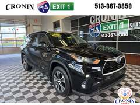
2023 Toyota Highlander XLE
$3,045 under KBB fair price Autotrader: Great price One owner
89,147 mi 2.5L hybrid, AWD Midnight Black Metallic ~35 mpg, about $3,336/yr in gas at 25,000 mi
Cronin Ford ★5.0, Harrison, OH, 211 mi away, listed 171 days ago
4
2020 Toyota Highlander Platinum
Certified pre-owned $3,790 under KBB fair price Autotrader: Great price One owner Price cut $5,699
107,119 mi 2.5L hybrid, AWD Moon Dust ~35 mpg, about $3,336/yr in gas at 25,000 mi
Oxmoor Toyota ★5.0, Louisville, KY, 239 mi away, listed 54 days ago
5
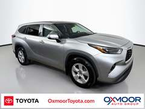
2023 Toyota Highlander LE
$2,540 under KBB fair price Autotrader: Great price
50,286 mi 2.5L hybrid, AWD Celestial Silver Metallic ~35 mpg, about $3,336/yr in gas at 25,000 mi
Oxmoor Toyota ★5.0, Louisville, KY, 239 mi away, listed 64 days ago
6
2025 Toyota Grand Highlander AWD Hybrid
Certified pre-owned $3,085 under KBB fair price One owner
77,217 mi 2.5L hybrid, AWD Celestial Silver Metallic ~34 mpg, about $3,434/yr in gas at 25,000 mi
Oakbrook Toyota In Westmont ★4.7, Westmont, IL, 39 mi away, listed 29 days ago
7
2023 Toyota Highlander Platinum
New since last check $2,053 under KBB fair price Autotrader: Great price One owner
39,418 mi 2.5L hybrid, AWD Magnetic Gray Metallic ~35 mpg, about $3,336/yr in gas at 25,000 mi
Peoria Toyota ★5.0, Peoria, IL, 99 mi away, listed 84 days ago
8
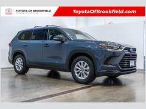
2025 Toyota Grand Highlander AWD Hybrid
New since last check $2,160 under KBB fair price Autotrader: Great price
38,514 mi 2.5L hybrid, AWD Cloud ~34 mpg, about $3,434/yr in gas at 25,000 mi
Toyota of Brookfield ★3.9, Brookfield, WI, 128 mi away, listed 45 days ago
New Grand Highlander / Highlander Hybrid 1
no photo
2026 Toyota Grand Highlander XLE
New since last check New $4,176 under sticker
New 2.5L hybrid, FWD Cloud ~34 mpg, about $3,434/yr in gas at 25,000 mi
Kunes Toyota Volkswagen Audi of Springfield, Springfield, IL, 143 mi away, listed 15 days ago
2
2026 Toyota Grand Highlander XLE
New $500 under sticker Just listed
New 2.5L hybrid, FWD Celestial Silver Metallic ~34 mpg, about $3,434/yr in gas at 25,000 mi
Napleton's Toyota of Urbana ★4.9, Urbana, IL, 79 mi away, listed 7 days ago
3
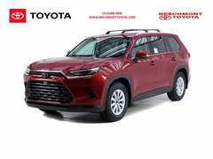
2026 Toyota Grand Highlander XLE
New $2,412 under sticker
New 2.5L hybrid, FWD Pearl ~34 mpg, about $3,434/yr in gas at 25,000 mi
Beechmont Toyota ★4.8, Cincinnati, OH, 239 mi away, listed 24 days ago
Kia Telluride 1
2024 Kia Telluride EX
New since last check $4,459 under KBB fair price Autotrader: Great price One owner
39,686 mi 3.8L 6cyl, AWD Gravity Gray ~21 mpg, about $5,560/yr in gas at 25,000 mi
EX Captain's Chair Package
Alphorn Ford ★4.9, Monroe, WI, 132 mi away, listed 95 days ago
2
2024 Kia Telluride EX
$4,383 under KBB fair price Autotrader: Great price One owner Price cut $1,754
48,291 mi 3.8L 6cyl, AWD Dark Moss ~21 mpg, about $5,560/yr in gas at 25,000 mi
EX Captain's Chair Package
Bob Poynter Chevrolet Buick GMC ★4.9, Seymour, IN, 189 mi away, listed 107 days ago
3
2024 Kia Telluride S
New since last check $3,687 under KBB fair price Autotrader: Great price One owner Just listed
27,975 mi 3.8L 6cyl, AWD Ebony Black ~21 mpg, about $5,560/yr in gas at 25,000 mi
S Sunroof Package
Napleton Kia of Carmel ★5.0, Indianapolis, IN, 129 mi away, listed 3 days ago
4
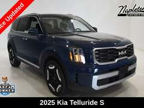
2025 Kia Telluride S
Cut $235 since last check $3,186 under KBB fair price Autotrader: Great price One owner
45,517 mi 3.8L 6cyl, FWD Midnight Lake Blue ~22 mpg, about $5,307/yr in gas at 25,000 mi
Napleton's Auto Park of Urbana ★4.9, Urbana, IL, 79 mi away, listed 79 days ago
5
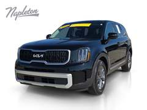
2025 Kia Telluride LX
New since last check $3,060 under KBB fair price Autotrader: Great price One owner Price cut $1,094
18,322 mi 3.8L 6cyl, FWD Ebony Black ~22 mpg, about $5,307/yr in gas at 25,000 mi
Napleton Kia of Fishers ★5.0, Fishers, IN, 130 mi away, listed 41 days ago
6
2025 Kia Telluride S
Certified pre-owned $3,171 under KBB fair price Autotrader: Great price One owner
61,561 mi 3.8L 6cyl, AWD Glacial White Pearl ~21 mpg, about $5,560/yr in gas at 25,000 mi
Napleton's Kia of Elmhurst ★5.0, Elmhurst, IL, 47 mi away, listed 72 days ago
Honda Odyssey 1
2025 Honda Odyssey EX-L
$3,356 under KBB fair price One owner
50,511 mi 3.5L 6cyl, FWD Black ~22 mpg, about $5,307/yr in gas at 25,000 mi
Automotive Connection ★4.0, Fairfield, OH, 219 mi away, listed 23 days ago
2
2025 Honda Odyssey EX-L
New since last check $2,461 under KBB fair price One owner
56,043 mi 3.5L 6cyl, FWD Solar Silver Metallic ~22 mpg, about $5,307/yr in gas at 25,000 mi
Oakbrook Toyota In Westmont ★4.7, Westmont, IL, 39 mi away, listed 58 days ago
3
2024 Honda Odyssey EX-L
$1,850 under KBB fair price Autotrader: Great price One owner
72,918 mi 3.5L 6cyl, FWD Obsidian Blue Pearl ~22 mpg, about $5,307/yr in gas at 25,000 mi
Ed Napleton Honda in River Oaks ★5.0, Lansing, IL, 27 mi away, listed 70 days ago
4
2024 Honda Odyssey EX-L
Certified pre-owned $2,043 under KBB fair price Autotrader: Great price One owner Price cut $1,942
104,043 mi 3.5L 6cyl, FWD Platinum White Pearl ~22 mpg, about $5,307/yr in gas at 25,000 mi
Honda Marysville ★5.0, Marysville, OH, 246 mi away, listed 44 days ago
5
2025 Honda Odyssey EX-L
Cut $200 since last check $1,130 under KBB fair price One owner
72,157 mi 3.5L 6cyl, FWD White ~22 mpg, about $5,307/yr in gas at 25,000 mi
Oakbrook Toyota In Westmont ★4.7, Westmont, IL, 39 mi away, listed 58 days ago
6
2023 Honda Odyssey Sport
New since last check Certified pre-owned $773 under KBB fair price Autotrader: Great price One owner Price cut $2,188
96,085 mi 3.5L 6cyl, FWD Platinum White Pearl ~22 mpg, about $5,307/yr in gas at 25,000 mi
Honda Marysville ★5.0, Marysville, OH, 246 mi away, listed 25 days ago
Kia Carnival 1
2025 Kia Carnival
New since last check $4,658 under KBB fair price Autotrader: Great price One owner Price cut $4,646
31,703 mi 3.5L 6cyl, FWD Panthera Metal ~21 mpg, about $5,560/yr in gas at 25,000 mi
Bommarito Honda Superstore ★5.0, Hazelwood, MO, 217 mi away, listed 86 days ago
2
2025 Kia Carnival
$3,294 under KBB fair price Autotrader: Great price One owner
56,189 mi 3.5L 6cyl, FWD Deep Chroma Blue ~21 mpg, about $5,560/yr in gas at 25,000 mi
Kunes Hyundai of Sycamore ★4.9, Sycamore, IL, 68 mi away, listed 81 days ago
3
2024 Kia Carnival EX
Cut $95 since last check Certified pre-owned $2,842 under KBB fair price Autotrader: Great price One owner
83,478 mi 3.5L 6cyl, FWD Astra Blue ~21 mpg, about $5,560/yr in gas at 25,000 mi
International KIA ★4.9, Orland Hills, IL, 24 mi away, listed 122 days ago
4
2024 Kia Carnival EX
$2,470 under KBB fair price Autotrader: Great price One owner Price cut $1,975
53,592 mi 3.5L 6cyl, FWD Aurora Black Pearl ~21 mpg, about $5,560/yr in gas at 25,000 mi
Mercedes-Benz of West Chester ★4.7, West Chester, OH, 224 mi away, listed 62 days ago
5
2024 Kia Carnival LX
Certified pre-owned $1,324 under KBB fair price Autotrader: Great price One owner
40,726 mi 3.5L 6cyl, FWD Panthera Metal ~21 mpg, about $5,560/yr in gas at 25,000 mi
Jake Sweeney KIA ★5.0, Florence, KY, 228 mi away, listed 30 days ago
6
2022 Kia Carnival SX Prestige
$1,578 under KBB fair price Autotrader: Great price One owner Price cut $1,709
77,485 mi 3.5L 6cyl, FWD Flare Red ~21 mpg, about $5,560/yr in gas at 25,000 mi
O'Daniel Ford ★4.8, New Haven, IN, 146 mi away, listed 58 days ago
Bronco vibe, less drama
Boxy, high, four-wheel drive, fun to look at, but built for 200,000 miles of commuting. The 4Runner is the Bronco's natural rival with a Toyota service record; the Wrangler 4xe is the plug-in Jeep that is suddenly cheap used; the Subarus are the practical pick; the Bronco Sport keeps the badge for $20,000 less.
Fit for her
Toyota 4Runner Reliability ★★★★★ · Comfort ★★★ · Room ★★★★
2025+ generation: 2.4 turbo, 22 mpg, hybrid 23 mpg; the old 4.0 V6 gets 17 Legendary resale and durability; bodies and frames outlast everything here Stiffer ride and more wind noise than a RAV4, far less than a Bronco New SR5s are discounted only $2,000 to $3,000; used is barely cheaper Fit for her
Jeep Wrangler 4xe Reliability ★★ · Comfort ★★ · Room ★★★
Plug-in hybrid: 21 miles electric, then 20 mpg; cheap if she can charge at home Used 4xe Saharas are $21,000 to $25,000, $5,000 under KBB, because buyers fear the battery Loudest, roughest ride of the group; only if the open-top life matters more than the drive Battery warranty 8 yr / 100,000 mi; check for the 2023 recall fix Fit for her
Subaru Outback / Forester and Bronco Sport Reliability ★★★★ · Comfort ★★★★ · Room ★★★★
Outback 28 mpg, Forester 29 mpg, AWD standard, EyeSight driver assist standard Outback Wilderness and Forester Wilderness have the lifted, rugged look Bronco Sport Big Bend: 26 mpg, Bronco styling, certified ones under $22,000 Watch Subaru CVTs past 100,000 miles; buy a certified one with the extended warranty
Toyota 4Runner 1
2026 Toyota 4Runner SR5
$3,754 under KBB fair price Autotrader: Great price One owner Price cut $1,411
2,475 mi 2.4L 4-cyl turbo, FWD Ice Cap ~22 mpg, about $5,307/yr in gas at 25,000 mi
Cronin Richmond Toyota Nissan ★5.0, Richmond, IN, 186 mi away, listed 50 days ago
2
2025 Toyota 4Runner SR5
Cut $212 since last check $2,766 under KBB fair price Autotrader: Great price Price cut $1,444
32,243 mi 2.4L 4-cyl turbo, 4x4 Underground ~22 mpg, about $5,307/yr in gas at 25,000 mi
Napleton St Louis Nissan ★4.8, Saint Louis, MO, 223 mi away, listed 59 days ago
3
2026 Toyota 4Runner SR5
Certified pre-owned $2,872 under KBB fair price
13,240 mi 2.4L 4-cyl turbo, 4x4 Black ~22 mpg, about $5,307/yr in gas at 25,000 mi
Ed Martin Toyota ★4.7, Noblesville, IN, 130 mi away, listed 71 days ago
4
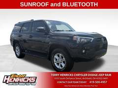
2023 Toyota 4Runner SR5 Premium
$2,619 under KBB fair price Autotrader: Great price One owner
60,949 mi 4L 6cyl, 4x4 Midnight Black Metallic ~17 mpg, about $6,868/yr in gas at 25,000 mi
Terry Henricks Chrysler Dodge Jeep Ram ★5.0, Archbold, OH, 184 mi away, listed 150 days ago
5
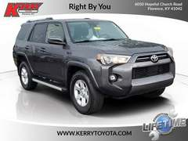
2023 Toyota 4Runner SR5
New since last check Certified pre-owned $1,772 under KBB fair price Autotrader: Great price One owner
23,317 mi 4L 6cyl, FWD Magnetic Gray Metallic ~17 mpg, about $6,868/yr in gas at 25,000 mi
Kerry Toyota ★4.5, Florence, KY, 229 mi away, listed 100 days ago
6
2022 Toyota 4Runner Limited
Cut $1 since last check $2,714 under KBB fair price Autotrader: Great price One owner
70,486 mi 4L 6cyl, 4x4 Magnetic Gray Metallic ~17 mpg, about $6,868/yr in gas at 25,000 mi
Huntley Ford ★4.8, Huntley, IL, 68 mi away, listed 113 days ago
7
2022 Toyota 4Runner SR5 Premium
$2,130 under KBB fair price Autotrader: Great price One owner
48,270 mi 4L 6cyl, 4x4 Magnetic Gray Metallic ~17 mpg, about $6,868/yr in gas at 25,000 mi
Preferred Chrysler Dodge Jeep Ram of Muskegon ★4.7, Muskegon, MI, 157 mi away, listed 93 days ago
8
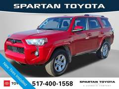
2021 Toyota 4Runner SR5 Premium
$3,260 under KBB fair price Autotrader: Great price Price cut $2,814
115,626 mi 4L 6cyl, 4x4 Barcelona Red Metallic ~17 mpg, about $6,868/yr in gas at 25,000 mi
Moonroof Package
Spartan Toyota of Lansing ★4.9, Lansing, MI, 196 mi away, listed 45 days ago
New 4Runner 1
2026 Toyota 4Runner SR5
New $2,902 under sticker
New 2.4L 4-cyl turbo, 4x4 Ice ~22 mpg, about $5,307/yr in gas at 25,000 mi
Toyota of Brookfield ★3.9, Brookfield, WI, 128 mi away, listed 38 days ago
2
2026 Toyota 4Runner SR5
New $2,954 under sticker
New 2.4L 4-cyl turbo, 4x4 Red ~22 mpg, about $5,307/yr in gas at 25,000 mi
Toyota of Brookfield ★3.9, Brookfield, WI, 128 mi away, listed 37 days ago
3
2026 Toyota 4Runner SR5
New $2,599 under sticker
New 2.4L 4-cyl turbo, 4x4 Ice ~22 mpg, about $5,307/yr in gas at 25,000 mi
Toyota on Western ★4.6, Chicago, IL, 37 mi away, listed 39 days ago
Jeep Wrangler (4xe and 2.0 turbo) 1
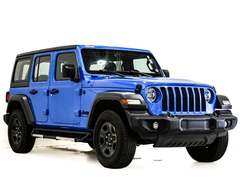
2024 Jeep Wrangler Unlimited Sport
$7,140 under KBB fair price Autotrader: Great price One owner
33,013 mi 2L 4-cyl turbo, 4x4 Hydro Blue Pearl Coat ~21 mpg, about $5,560/yr in gas at 25,000 mi
Napleton's River Oaks Chrysler Jeep Dodge ★5.0, Lansing, IL, 27 mi away, listed 86 days ago
2
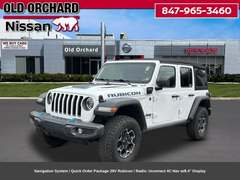
2023 Jeep Wrangler Unlimited Rubicon 4xe
New since last check $6,203 under KBB fair price Autotrader: Great price One owner
11,244 mi 2L hybrid, 4x4 Bright White Clearcoat ~20 mpg, about $5,838/yr in gas at 25,000 mi
Cold Weather Group
Old Orchard Nissan ★5.0, Skokie, IL, 56 mi away, listed 192 days ago
3
2022 Jeep Wrangler Unlimited Sport
$5,643 under KBB fair price Autotrader: Great price One owner
82,136 mi 3L 6-cyl turbo, 4x4 Sarge Green Clearcoat ~19 mpg, about $6,145/yr in gas at 25,000 mi
Quick Order Package 26L Altitude; 8.4" Radio & Pre
Huntley Ford ★4.8, Huntley, IL, 68 mi away, listed 129 days ago
4
2022 Jeep Wrangler Unlimited Sahara
$5,297 under KBB fair price Autotrader: Great price One owner
25,048 mi 2L hybrid, 4x4 Granite Crystal Metallic Clear ~20 mpg, about $5,838/yr in gas at 25,000 mi
Cold Weather Group
Driven Auto Dundee ★5.0, East Dundee, IL, 62 mi away, listed 21 days ago
5
2023 Jeep Wrangler Unlimited Sport
Certified pre-owned $4,950 under KBB fair price Autotrader: Great price One owner Price cut $2,741
48,260 mi 3.6L 6cyl, 4x4 Sting-gray Clearcoat ~19 mpg, about $6,145/yr in gas at 25,000 mi
Napleton's Mid Rivers Chrysler Dodge Jeep RAM FIAT ★5.0, Saint Peters, MO, 223 mi away, listed 64 days ago
6
2022 Jeep Wrangler Unlimited Sahara
New since last check $4,264 under KBB fair price Autotrader: Great price One owner Price cut $3,058
33,793 mi 2L hybrid, 4x4 Bright White Clearcoat ~20 mpg, about $5,838/yr in gas at 25,000 mi
AutoGiant USA ★4.8, Indianapolis, IN, 126 mi away, listed 97 days ago
7
2022 Jeep Wrangler Unlimited Sahara
New since last check $4,251 under KBB fair price Autotrader: Great price One owner Price cut $2,590
38,400 mi 2L hybrid, 4x4 Sarge Green Clearcoat ~20 mpg, about $5,838/yr in gas at 25,000 mi
Trailer Tow & HD Electrical Group
McGrath Chevrolet of Dubuque ★4.9, Dubuque, IA, 171 mi away, listed 53 days ago
8
2022 Jeep Wrangler Unlimited Sport
Cut $400 since last check $4,281 under KBB fair price Autotrader: Great price Price cut $2,398
32,584 mi 2L 4-cyl turbo, 4x4 Granite Crystal Metallic Clear ~21 mpg, about $5,560/yr in gas at 25,000 mi
Quick Order Package 22S Sport S
Tom Gill Buick GMC ★5.0, Hamilton, OH, 216 mi away, listed 123 days ago
Subaru Outback and Forester 1
2022 Subaru Outback Wilderness
$4,739 under KBB fair price One owner Price cut $2,000
80,378 mi 2.4L 4-cyl turbo, 4x4 Crystal White Pearl ~25 mpg, about $4,670/yr in gas at 25,000 mi
Wilderness Package
RS Motors ★4.9, Indianapolis, IN, 129 mi away, listed 179 days ago
2
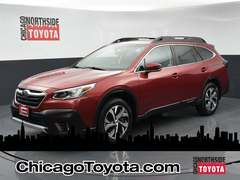
2022 Subaru Outback Limited
$2,000 under KBB fair price Autotrader: Great price One owner
62,865 mi 2.5L 4cyl, 4x4 Crimson Red Pearl ~28 mpg, about $4,170/yr in gas at 25,000 mi
Popular Package #2
Chicago Northside Toyota ★4.9, Chicago, IL, 52 mi away, listed 62 days ago
3
2024 Subaru Outback Premium
$1,533 under KBB fair price Autotrader: Great price One owner
47,488 mi 2.5L 4cyl, 4x4 Gray ~28 mpg, about $4,170/yr in gas at 25,000 mi
Ford Lincoln of Lafayette ★4.8, Lafayette, IN, 78 mi away, listed 50 days ago
4
2021 Subaru Outback Touring
New since last check $2,362 under KBB fair price Autotrader: Great price One owner
56,354 mi 2.5L 4cyl, 4x4 Crystal Black Silica ~28 mpg, about $4,170/yr in gas at 25,000 mi
Penske Honda, Indianapolis, IN, 129 mi away, listed 32 days ago
5
2021 Subaru Forester Premium
New since last check $1,625 under KBB fair price Autotrader: Great price One owner
68,701 mi 2.5L 4cyl, 4x4 Crimson Red Pearl ~29 mpg, about $4,026/yr in gas at 25,000 mi
Popular Package #1
Ray Chevrolet ★5.0, Fox Lake, IL, 81 mi away, listed 24 days ago
6
2021 Subaru Forester Touring
Cut $495 since last check $2,610 under KBB fair price Price cut $2,000
52,183 mi 2.5L 4cyl, 4x4 Black ~29 mpg, about $4,026/yr in gas at 25,000 mi
AutoConnect USA ★5.0, Green Bay, WI, 225 mi away, listed 63 days ago
7
2024 Subaru Forester Premium
New since last check $1,355 under KBB fair price Autotrader: Great price One owner
82,452 mi 2.5L 4cyl, 4x4 Crystal White Pearl ~29 mpg, about $4,026/yr in gas at 25,000 mi
Bloomington Auto Mall ★4.8, Normal, IL, 77 mi away, listed 196 days ago
8
2023 Subaru Forester
New since last check $1,681 under KBB fair price One owner Price cut $2,301
87,865 mi 2.5L 4cyl, 4x4 Gray ~29 mpg, about $4,026/yr in gas at 25,000 mi
Sagamore Auto Leasing and Sales Company ★3.5, Lebanon, IN, 110 mi away, listed 49 days ago
New Outback / Forester Nothing in this group today.
Ford Bronco Sport (any color) 1
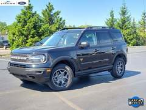
2021 Ford Bronco Sport Badlands
Certified pre-owned $5,975 under KBB fair price Autotrader: Great price One owner Price cut $2,034
25,808 mi 2L 4-cyl turbo, 4x4 Shadow Black ~23 mpg, about $5,076/yr in gas at 25,000 mi
Lakeview Ford Lincoln ★4.9, Battle Creek, MI, 155 mi away, listed 199 days ago
2
2024 Ford Bronco Sport Big Bend
Cut $777 since last check Certified pre-owned $4,162 under KBB fair price Autotrader: Great price One owner Price cut $4,000
40,073 mi 1.5L 3-cyl turbo, 4x4 Azure Gray Metallic ~26 mpg, about $4,490/yr in gas at 25,000 mi
Germain Ford of Beavercreek ★5.0, Beavercreek, OH, 227 mi away, listed 62 days ago
3
2024 Ford Bronco Sport Big Bend
Certified pre-owned $4,150 under KBB fair price Autotrader: Great price
24,983 mi 1.5L 3-cyl turbo, 4x4 Blue Metallic ~26 mpg, about $4,490/yr in gas at 25,000 mi
Convenience Package
Alphorn Ford ★4.9, Monroe, WI, 132 mi away, listed 101 days ago
4
2025 Ford Bronco Sport Outer Banks
Cut $940 since last check Certified pre-owned $3,566 under KBB fair price Autotrader: Great price One owner
49,187 mi 1.5L 3-cyl turbo, 4x4 Oxford White ~26 mpg, about $4,490/yr in gas at 25,000 mi
Outer Banks Tech Package+
Elmhurst Ford ★5.0, Bensenville, IL, 48 mi away, listed 86 days ago
5
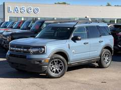
2024 Ford Bronco Sport Big Bend
New since last check Certified pre-owned $3,274 under KBB fair price Autotrader: Great price One owner
19,592 mi 1.5L 3-cyl turbo, 4x4 Azure Gray Metallic ~26 mpg, about $4,490/yr in gas at 25,000 mi
Convenience Package
Lasco Ford ★4.7, Fenton, MI, 237 mi away, listed 39 days ago
6
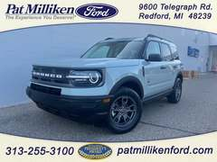
2023 Ford Bronco Sport Big Bend
Certified pre-owned $3,264 under KBB fair price Autotrader: Great price One owner Price cut $1,273
29,482 mi 1.5L 3-cyl turbo, 4x4 Cactus Gray ~26 mpg, about $4,490/yr in gas at 25,000 mi
Pat Milliken Ford ★4.9, Redford, MI, 248 mi away, listed 86 days ago
7
2023 Ford Bronco Sport Big Bend
$3,148 under KBB fair price Autotrader: Great price One owner
37,703 mi 1.5L 3-cyl turbo, 4x4 Blue Metallic ~26 mpg, about $4,490/yr in gas at 25,000 mi
Convenience Package
Capitol City Ford of Greenfield ★5.0, Greenfield, IN, 147 mi away, listed 108 days ago
8
2023 Ford Bronco Sport Big Bend
Certified pre-owned $3,075 under KBB fair price Autotrader: Great price One owner
31,510 mi 1.5L 3-cyl turbo, 4x4 Silver Metallic ~26 mpg, about $4,490/yr in gas at 25,000 mi
Convenience Package
Auto Park Ford ★5.0, Sturgis, MI, 130 mi away, listed 64 days ago
How to decide
The honest read on a Bronco for 25,000 miles a year
Gas: 19 to 21 mpg means about $5,838 a year at today's Illinois prices. A RAV4 Hybrid is $2,994. Over five years that gap is a used car.Noise: the Bronco's flat windshield and removable roof make it the loudest vehicle on this board at highway speed. Outer Banks with the sound-deadening headliner helps. Test-drive it at 70 mph before falling in love.Reliability: Consumer Reports rates the Bronco average, ahead of the Wrangler and well behind the 4Runner and RAV4. Known issues: 2021 to early-2022 2.7 V6 intake valves (engine replacements under warranty, fixed in production October 2021), early hardtops replaced under recall, and tie rods on hard off-road use.Resale: strong. Broncos hold value better than almost anything but a 4Runner, which softens the gas bill when she sells.If it has to be a Bronco: 2023 or newer, 2.3 engine, 4-door, Big Bend or Outer Banks, no Sasquatch, hardtop, and a Ford Power Protect extended warranty if she is buying used out of warranty. My ranking for her
Toyota RAV4 Hybrid (or CR-V Hybrid if she wants more room). Cheapest to own by a mile, AWD, bulletproof. Buy a 2022 to 2024 one under $28,000 or a new 2026 at sticker.Toyota Sienna if she really does live out of the car: nothing else combines 36 mpg with a flat 8-foot floor.Toyota 4Runner (2025+) for the rugged look without the Bronco's noise and repair record. Pay the premium once, keep it 15 years.Yellow Bronco : the Brookfield Yellowstone Heritage Edition at $52,990 or the Saint Louis Cyber Orange Metallic Tricoat Raptor at $55,258, with eyes open about gas and noise. It is the only one on this list she will smile at every morning, and that counts for something.
Side by side at 25,000 miles a year
Vehicle MPG Gas / yr Typical price Reliability Comfort and noise Buy it for Ford Bronco 2.3 Big Bend 4-door 21 $5,560 $38k new / $30k used Average (CR); 2.3 avoids the V6 valve issue Loud at 70 mph, firm ride, hardtop creaks Removable roof, 4x4, resale, the look Ford Bronco 2.7 Outer Banks / Badlands 19 $6,145 $42k new / $34k used Average; 2021 to early-2022 V6 had valve failures Quieter trim, heated seats; still loud Power, towing, luxury trims Toyota RAV4 Hybrid 39 $2,994 $34k new / $25k used Excellent Quiet, soft, great seats Best cost per mile here Honda CR-V Hybrid 38 $3,072 $36k new / $27k used Excellent Quietest compact, roomiest back seat Comfort and space Lexus NX 350h 39 $2,994 $48k new / $47k used Excellent Luxury quiet, best seats If comfort is the whole point Toyota Sienna hybrid 36 $3,243 $44k new / $32k used Excellent Minivan quiet, flat floor, sliding doors Living in it, hauling anything Toyota Grand Highlander hybrid 34 $3,434 $46k new / $50k used Very good Big, quiet, adult third row Family-size with real mpg Kia Telluride 21 $5,560 $36k new / $26k used Good; long warranty Very comfortable, 3 rows Looks and warranty, not mpg Toyota 4Runner (2025+) 22 $5,307 $44k new / $38k used Excellent Firm, some wind noise Bronco shape with Toyota bones Jeep Wrangler 4xe 20 $5,838 $50k new / $22k used Below average Loud, rough Only for the open-top life Subaru Outback 28 $4,170 $30k new / $20k used Good Quiet, comfortable, wagon-easy loading Practical AWD on a budget Ford Bronco Sport 1.5 26 $4,490 $31k new / $21k used Average Car-quiet, small Bronco badge, half the price
Gas at $4.67 a gallon (AAA Illinois average, mid-October). MPG is EPA combined for the common configuration. Payments on the listings assume 10% down, 7.5% APR, 72 months and 7% tax and fees. "Under KBB" compares the asking price with Kelley Blue Book's fair purchase price as Autotrader reports it for that exact car.
How to shop these
Every "View" button opens the live Autotrader listing. Prices move daily; the Brookfield Yellowstone Heritage Edition at $52,990 or the Saint Louis Cyber Orange Metallic Tricoat Raptor at $55,258 are the ones to call first.
For any used car: ask for the OASIS report (Ford), Toyota or Honda service history by VIN, and get a $150 to $200 independent pre-purchase inspection. Walk away from anything with a branded title.
Out-of-state purchases (Indiana, Wisconsin, Michigan, Ohio) are fine: the dealer collects no sales tax and she pays Illinois tax at titling. Budget a day for the drive.
Financing: get a credit-union pre-approval first (Consumers Credit Union, Alliant), then let the dealer try to beat it. Ford Credit runs 1.9% to 3.9% offers on 2026 Broncos most months.
Listings from Autotrader's dealer feed, 2026-11-14, searched from zip 60950 with a 250-mile radius; counts are Autotrader's totals that day. Reliability notes draw on Consumer Reports owner surveys and the NHTSA investigation of the 2021 Bronco 2.7-liter engine. This is research, not a dealer quote; confirm price, fees and history on the listing and in person.  2023 Ford Bronco Heritage Edition42,017 mi2.7L 6-cyl turbo, 4x4Yellowstone4-door~19 mpg, about $6,145/yr in gas at 25,000 miSecond Yellowstone Heritage, 7,000 fewer miles, one owner, at a 4.9-star Cadillac store in the Milwaukee suburbs. Listed with no price shown. KBB fair purchase price is about $55,350, so open at $52,000 and see.Crest Cadillac Inc ★4.9, Brookfield, WI, 128 mi away, listed 21 days ago
2023 Ford Bronco Heritage Edition42,017 mi2.7L 6-cyl turbo, 4x4Yellowstone4-door~19 mpg, about $6,145/yr in gas at 25,000 miSecond Yellowstone Heritage, 7,000 fewer miles, one owner, at a 4.9-star Cadillac store in the Milwaukee suburbs. Listed with no price shown. KBB fair purchase price is about $55,350, so open at $52,000 and see.Crest Cadillac Inc ★4.9, Brookfield, WI, 128 mi away, listed 21 days ago 2023 Ford Bronco Heritage Edition49,461 mi2.7L 6-cyl turbo, 4x4Yellowstone4-door~19 mpg, about $6,145/yr in gas at 25,000 miThe yellow one you can actually buy today. Heritage Edition means Oxford White roof, grille and wheels over Yellowstone paint, the 2.7 V6 and the Sasquatch 35-inch tire package. Price already cut twice from $56,995. Lafayette is a 90-minute drive.UNLIMITED MOTORS 4, Lafayette, IN, 79 mi away, listed 42 days ago
2023 Ford Bronco Heritage Edition49,461 mi2.7L 6-cyl turbo, 4x4Yellowstone4-door~19 mpg, about $6,145/yr in gas at 25,000 miThe yellow one you can actually buy today. Heritage Edition means Oxford White roof, grille and wheels over Yellowstone paint, the 2.7 V6 and the Sasquatch 35-inch tire package. Price already cut twice from $56,995. Lafayette is a 90-minute drive.UNLIMITED MOTORS 4, Lafayette, IN, 79 mi away, listed 42 days ago 2022 Ford Bronco Raptor45,976 mi3L 6-cyl turbo, 4x4Cyber Orange Metallic Tricoat4-door~15 mpg, about $7,783/yr in gas at 25,000 miBest orange buy on the board: Great price per Autotrader, $7,592 under KBB, 45,976 miles, 4.6-star dealer, Suntrup Ford - Westport in Saint Louis, MO, listed 71 days ago.374A Lux Package; Interior Carbon Fiber Pack 6Suntrup Ford - Westport ★4.6, Saint Louis, MO, 223 mi away, listed 71 days ago
2022 Ford Bronco Raptor45,976 mi3L 6-cyl turbo, 4x4Cyber Orange Metallic Tricoat4-door~15 mpg, about $7,783/yr in gas at 25,000 miBest orange buy on the board: Great price per Autotrader, $7,592 under KBB, 45,976 miles, 4.6-star dealer, Suntrup Ford - Westport in Saint Louis, MO, listed 71 days ago.374A Lux Package; Interior Carbon Fiber Pack 6Suntrup Ford - Westport ★4.6, Saint Louis, MO, 223 mi away, listed 71 days ago 2021 Ford Bronco Outer Banks50,344 mi2.3L 4-cyl turbo, 4x4Cyber Orange Metallic Tricoat4-door~15 mpg, about $7,783/yr in gas at 25,000 mi313A High PackageRosen Ford ★5.0, Belleville, WI, 142 mi away, listed 101 days ago
2021 Ford Bronco Outer Banks50,344 mi2.3L 4-cyl turbo, 4x4Cyber Orange Metallic Tricoat4-door~15 mpg, about $7,783/yr in gas at 25,000 mi313A High PackageRosen Ford ★5.0, Belleville, WI, 142 mi away, listed 101 days ago 2021 Ford Bronco First Edition35,563 mi2.7L 6-cyl turbo, 4x4Orange Metallic4-door~19 mpg, about $6,145/yr in gas at 25,000 miKunes Lakes Chevrolet, Lake Bluff, IL, 71 mi away, listed 46 days ago
2021 Ford Bronco First Edition35,563 mi2.7L 6-cyl turbo, 4x4Orange Metallic4-door~19 mpg, about $6,145/yr in gas at 25,000 miKunes Lakes Chevrolet, Lake Bluff, IL, 71 mi away, listed 46 days ago 2022 Ford Bronco Badlands25,579 mi2.7L 6-cyl turbo, 4x4Orange Metallic2-door~17 mpg, about $6,868/yr in gas at 25,000 mi334A Lux Package; Sasquatch PackagePremier Auto Source - IN ★4.7, Terre Haute, IN, 130 mi away, listed 413 days ago
2022 Ford Bronco Badlands25,579 mi2.7L 6-cyl turbo, 4x4Orange Metallic2-door~17 mpg, about $6,868/yr in gas at 25,000 mi334A Lux Package; Sasquatch PackagePremier Auto Source - IN ★4.7, Terre Haute, IN, 130 mi away, listed 413 days ago 2022 Ford Bronco Black Diamond31,228 mi2.3L 4-cyl turbo, 4x4Orange Metallic4-door~15 mpg, about $7,783/yr in gas at 25,000 miSasquatch PackageWyatt Chevrolet GMC ★4.9, Whitehall, MI, 168 mi away, listed 14 days ago
2022 Ford Bronco Black Diamond31,228 mi2.3L 4-cyl turbo, 4x4Orange Metallic4-door~15 mpg, about $7,783/yr in gas at 25,000 miSasquatch PackageWyatt Chevrolet GMC ★4.9, Whitehall, MI, 168 mi away, listed 14 days ago 2023 Ford Bronco Badlands74,880 mi2.7L 6-cyl turbo, 4x4Orange4-door~17 mpg, about $6,868/yr in gas at 25,000 mi334A Lux Package; Sasquatch PackageUnlimited Auto Group ★4.4, West Chester, OH, 224 mi away, listed 70 days ago
2023 Ford Bronco Badlands74,880 mi2.7L 6-cyl turbo, 4x4Orange4-door~17 mpg, about $6,868/yr in gas at 25,000 mi334A Lux Package; Sasquatch PackageUnlimited Auto Group ★4.4, West Chester, OH, 224 mi away, listed 70 days ago 2021 Ford Bronco Outer Banks67,253 mi2.3L 4-cyl turbo, 4x4Cyber Orange Metallic Tricoat4-door~15 mpg, about $7,783/yr in gas at 25,000 miVan Horn Ford of Oconomowoc ★5.0, Oconomowoc, WI, 132 mi away, listed 24 days ago
2021 Ford Bronco Outer Banks67,253 mi2.3L 4-cyl turbo, 4x4Cyber Orange Metallic Tricoat4-door~15 mpg, about $7,783/yr in gas at 25,000 miVan Horn Ford of Oconomowoc ★5.0, Oconomowoc, WI, 132 mi away, listed 24 days ago 2023 Ford Bronco Raptor27,286 mi3L 6-cyl turbo, 4x4Code Orange4-door~15 mpg, about $7,783/yr in gas at 25,000 mi374A Lux Package; Interior Carbon Fiber Pack 6Heller Ford Sales Inc ★5.0, El Paso, IL, 71 mi away, listed 136 days ago
2023 Ford Bronco Raptor27,286 mi3L 6-cyl turbo, 4x4Code Orange4-door~15 mpg, about $7,783/yr in gas at 25,000 mi374A Lux Package; Interior Carbon Fiber Pack 6Heller Ford Sales Inc ★5.0, El Paso, IL, 71 mi away, listed 136 days ago 2026 Ford Bronco Big Bend65 mi2.3L 4-cyl turbo, 4x4Orange4-door~15 mpg, about $7,783/yr in gas at 25,000 miBlack Diamond Package; Sasquatch Package; 222A MidPackey Webb Ford ★4.7, Downers Grove, IL, 40 mi away, listed 41 days ago
2026 Ford Bronco Big Bend65 mi2.3L 4-cyl turbo, 4x4Orange4-door~15 mpg, about $7,783/yr in gas at 25,000 miBlack Diamond Package; Sasquatch Package; 222A MidPackey Webb Ford ★4.7, Downers Grove, IL, 40 mi away, listed 41 days ago 2021 Ford Bronco Outer Banks66,091 mi2.3L 4-cyl turbo, 4x4Orange Metallic4-door~15 mpg, about $7,783/yr in gas at 25,000 miAndy Mohr Ford ★4.6, Plainfield, IN, 132 mi away, listed 83 days ago
2021 Ford Bronco Outer Banks66,091 mi2.3L 4-cyl turbo, 4x4Orange Metallic4-door~15 mpg, about $7,783/yr in gas at 25,000 miAndy Mohr Ford ★4.6, Plainfield, IN, 132 mi away, listed 83 days ago 2022 Ford Bronco Wildtrak50,135 mi2.7L 6-cyl turbo, 4x4Orange Metallic4-door~17 mpg, about $6,868/yr in gas at 25,000 mi354A Lux PackagePat Milliken Ford ★4.9, Redford, MI, 248 mi away, listed 24 days ago
2022 Ford Bronco Wildtrak50,135 mi2.7L 6-cyl turbo, 4x4Orange Metallic4-door~17 mpg, about $6,868/yr in gas at 25,000 mi354A Lux PackagePat Milliken Ford ★4.9, Redford, MI, 248 mi away, listed 24 days ago 2021 Ford Bronco Outer Banks47,291 mi2.7L 6-cyl turbo, 4x4Orange Metallic4-door~17 mpg, about $6,868/yr in gas at 25,000 miSasquatch PackageFeldman Chevrolet of Livonia ★4.6, Livonia, MI, 243 mi away, listed 32 days ago
2021 Ford Bronco Outer Banks47,291 mi2.7L 6-cyl turbo, 4x4Orange Metallic4-door~17 mpg, about $6,868/yr in gas at 25,000 miSasquatch PackageFeldman Chevrolet of Livonia ★4.6, Livonia, MI, 243 mi away, listed 32 days ago 2022 Ford Bronco Outer Banks106,948 mi2.7L 6-cyl turbo, 4x4Orange4-door~19 mpg, about $6,145/yr in gas at 25,000 mi314A Lux PackageCAR AND DRIVE MOTORSPORTS ★2.8, Midlothian, IL, 27 mi away, listed 394 days ago
2022 Ford Bronco Outer Banks106,948 mi2.7L 6-cyl turbo, 4x4Orange4-door~19 mpg, about $6,145/yr in gas at 25,000 mi314A Lux PackageCAR AND DRIVE MOTORSPORTS ★2.8, Midlothian, IL, 27 mi away, listed 394 days ago 2022 Ford Bronco Big Bend57,801 mi2.3L 4-cyl turbo, 4x4Cyber Orange Metallic Tricoat4-door~15 mpg, about $7,783/yr in gas at 25,000 mi222A Mid PackageHubler Chevrolet ★4.5, Indianapolis, IN, 143 mi away, listed 155 days ago
2022 Ford Bronco Big Bend57,801 mi2.3L 4-cyl turbo, 4x4Cyber Orange Metallic Tricoat4-door~15 mpg, about $7,783/yr in gas at 25,000 mi222A Mid PackageHubler Chevrolet ★4.5, Indianapolis, IN, 143 mi away, listed 155 days ago 2022 Ford Bronco Outer Banks2,696 mi2.7L 6-cyl turbo, 4x4Cyber Orange Metallic Tricoat2-door~17 mpg, about $6,868/yr in gas at 25,000 miSasquatch Package; 314A Lux PackageGem City Ford Lincoln ★4.8, Quincy, IL, 204 mi away, listed 17 days ago
2022 Ford Bronco Outer Banks2,696 mi2.7L 6-cyl turbo, 4x4Cyber Orange Metallic Tricoat2-door~17 mpg, about $6,868/yr in gas at 25,000 miSasquatch Package; 314A Lux PackageGem City Ford Lincoln ★4.8, Quincy, IL, 204 mi away, listed 17 days ago 2022 Ford Bronco Big Bend32,759 mi2.7L 6-cyl turbo, 4x4Cyber Orange Metallic Tricoat2-door~19 mpg, about $6,145/yr in gas at 25,000 mi222A Mid PackageWebb Ford ★4.6, Highland, IN, 28 mi away, listed 24 days ago
2022 Ford Bronco Big Bend32,759 mi2.7L 6-cyl turbo, 4x4Cyber Orange Metallic Tricoat2-door~19 mpg, about $6,145/yr in gas at 25,000 mi222A Mid PackageWebb Ford ★4.6, Highland, IN, 28 mi away, listed 24 days ago 2022 Ford Bronco Wildtrak42,927 mi2.7L 6-cyl turbo, 4x4Cyber Orange Metallic Tri-coat4-door~17 mpg, about $6,868/yr in gas at 25,000 mi354A Lux PackageR&B Car Company ★4.5, Fort Wayne, IN, 139 mi away, listed 9 days ago
2022 Ford Bronco Wildtrak42,927 mi2.7L 6-cyl turbo, 4x4Cyber Orange Metallic Tri-coat4-door~17 mpg, about $6,868/yr in gas at 25,000 mi354A Lux PackageR&B Car Company ★4.5, Fort Wayne, IN, 139 mi away, listed 9 days ago 2021 Ford Bronco First Edition14,810 mi2.7L 6-cyl turbo, 4x4Orange Metallic4-door~19 mpg, about $6,145/yr in gas at 25,000 miD-Patrick Ford Lincoln ★4.7, Evansville, IN, 227 mi away, listed 155 days ago
2021 Ford Bronco First Edition14,810 mi2.7L 6-cyl turbo, 4x4Orange Metallic4-door~19 mpg, about $6,145/yr in gas at 25,000 miD-Patrick Ford Lincoln ★4.7, Evansville, IN, 227 mi away, listed 155 days ago 2021 Ford Bronco Badlands73,229 mi2.3L 4-cyl turbo, 4x4Orange Metallic4-door~15 mpg, about $7,783/yr in gas at 25,000 mi333A High PackageClift Buick GMC ★4.9, Adrian, MI, 201 mi away, listed 53 days ago
2021 Ford Bronco Badlands73,229 mi2.3L 4-cyl turbo, 4x4Orange Metallic4-door~15 mpg, about $7,783/yr in gas at 25,000 mi333A High PackageClift Buick GMC ★4.9, Adrian, MI, 201 mi away, listed 53 days ago 2021 Ford Bronco Outer Banks76,003 mi2.7L 6-cyl turbo, 4x4Cyber Orange Metallic Tricoat4-door~17 mpg, about $6,868/yr in gas at 25,000 miSasquatch Package; 313A High PackageDerrow-Shirkey Ford Lincoln ★4.3, Montpelier, OH, 170 mi away, listed 19 days ago
2021 Ford Bronco Outer Banks76,003 mi2.7L 6-cyl turbo, 4x4Cyber Orange Metallic Tricoat4-door~17 mpg, about $6,868/yr in gas at 25,000 miSasquatch Package; 313A High PackageDerrow-Shirkey Ford Lincoln ★4.3, Montpelier, OH, 170 mi away, listed 19 days ago 2022 Ford Bronco Outer Banks25,562 mi2.7L 6-cyl turbo, 4x4Cyber Orange Metallic4-door~19 mpg, about $6,145/yr in gas at 25,000 mi314A Lux PackageThe Auto Livery ★4.3, Ross, OH, 215 mi away, listed 409 days ago
2022 Ford Bronco Outer Banks25,562 mi2.7L 6-cyl turbo, 4x4Cyber Orange Metallic4-door~19 mpg, about $6,145/yr in gas at 25,000 mi314A Lux PackageThe Auto Livery ★4.3, Ross, OH, 215 mi away, listed 409 days ago 2021 Ford Bronco Black Diamond79,723 mi2.3L 4-cyl turbo, 4x4, manualOrange Metallic4-door~15 mpg, about $7,783/yr in gas at 25,000 miBrighton Ford ★4.8, Brighton, MI, 227 mi away, listed 30 days ago
2021 Ford Bronco Black Diamond79,723 mi2.3L 4-cyl turbo, 4x4, manualOrange Metallic4-door~15 mpg, about $7,783/yr in gas at 25,000 miBrighton Ford ★4.8, Brighton, MI, 227 mi away, listed 30 days ago 2026 Ford Bronco Sport Big BendNew1.5L 3-cyl turbo, 4x4Orange Fury Metallic Tri-coat~26 mpg, about $4,490/yr in gas at 25,000 miConvenience PackageGRAFF FORD OF CHESTERTON ★5.0, Chesterton, IN, 45 mi away, listed 91 days ago
2026 Ford Bronco Sport Big BendNew1.5L 3-cyl turbo, 4x4Orange Fury Metallic Tri-coat~26 mpg, about $4,490/yr in gas at 25,000 miConvenience PackageGRAFF FORD OF CHESTERTON ★5.0, Chesterton, IN, 45 mi away, listed 91 days ago 2026 Ford Bronco Sport Outer BanksNew1.5L 3-cyl turbo, 4x4Orange Fury Metallic Tri-coat~26 mpg, about $4,490/yr in gas at 25,000 miFord Connectivity Pack (1-Time Purchase - 7 Years)Suntrup Ford Westport ★4.6, Saint Louis, MO, 223 mi away, listed 144 days ago
2026 Ford Bronco Sport Outer BanksNew1.5L 3-cyl turbo, 4x4Orange Fury Metallic Tri-coat~26 mpg, about $4,490/yr in gas at 25,000 miFord Connectivity Pack (1-Time Purchase - 7 Years)Suntrup Ford Westport ★4.6, Saint Louis, MO, 223 mi away, listed 144 days ago 2026 Ford Bronco Sport Big BendNew1.5L 3-cyl turbo, 4x4Orange Fury Metallic Tri-coat~26 mpg, about $4,490/yr in gas at 25,000 miSuntrup Ford Westport ★4.6, Saint Louis, MO, 223 mi away, listed 126 days ago
2026 Ford Bronco Sport Big BendNew1.5L 3-cyl turbo, 4x4Orange Fury Metallic Tri-coat~26 mpg, about $4,490/yr in gas at 25,000 miSuntrup Ford Westport ★4.6, Saint Louis, MO, 223 mi away, listed 126 days ago 2026 Ford Bronco Sport Big BendNew1.5L 3-cyl turbo, 4x4Orange Fury Metallic Tri-coat~26 mpg, about $4,490/yr in gas at 25,000 miBlack Appearance PackageBuss Ford ★4.9, Mchenry, IL, 78 mi away, listed 310 days ago
2026 Ford Bronco Sport Big BendNew1.5L 3-cyl turbo, 4x4Orange Fury Metallic Tri-coat~26 mpg, about $4,490/yr in gas at 25,000 miBlack Appearance PackageBuss Ford ★4.9, Mchenry, IL, 78 mi away, listed 310 days ago 2026 Ford Bronco Sport Big BendNew1.5L 3-cyl turbo, 4x4Orange Fury Metallic Tri-coat~26 mpg, about $4,490/yr in gas at 25,000 miBlack Appearance PackageLebanon Ford ★5.0, Lebanon, OH, 229 mi away, listed 192 days ago
2026 Ford Bronco Sport Big BendNew1.5L 3-cyl turbo, 4x4Orange Fury Metallic Tri-coat~26 mpg, about $4,490/yr in gas at 25,000 miBlack Appearance PackageLebanon Ford ★5.0, Lebanon, OH, 229 mi away, listed 192 days ago 2026 Ford Bronco Sport Big BendNew1.5L 3-cyl turbo, 4x4Orange Fury Metallic Tri-coat~26 mpg, about $4,490/yr in gas at 25,000 miConvenience Package; Interior Protection PackageMike Murphy Ford ★4.9, Morton, IL, 95 mi away, listed 133 days ago
2026 Ford Bronco Sport Big BendNew1.5L 3-cyl turbo, 4x4Orange Fury Metallic Tri-coat~26 mpg, about $4,490/yr in gas at 25,000 miConvenience Package; Interior Protection PackageMike Murphy Ford ★4.9, Morton, IL, 95 mi away, listed 133 days ago 2026 Ford Bronco Sport Big BendNew1.5L 3-cyl turbo, 4x4Orange Fury Metallic Tri-coat~26 mpg, about $4,490/yr in gas at 25,000 miFord Connectivity Pack (1-Time Purchase - 7 Years)Wetzel Ford ★4.7, Richmond, IN, 186 mi away, listed 206 days ago
2026 Ford Bronco Sport Big BendNew1.5L 3-cyl turbo, 4x4Orange Fury Metallic Tri-coat~26 mpg, about $4,490/yr in gas at 25,000 miFord Connectivity Pack (1-Time Purchase - 7 Years)Wetzel Ford ★4.7, Richmond, IN, 186 mi away, listed 206 days ago